FR
FR
 EN
EN
 DE
DE
 ES
ES
 IT
IT
 PT
PT
 PL
PL
 RO
RO
 TH
TH
 AR
AR
 CN
CN
📖 Manuel d'utilisation Kitviewv1.5
Guide simple pour organiser les photos de vos patients Ne vous inquiétez pas, c'est comme gérer un album photo familial ! Ce guide va vous expliquer pas à pas comment bien ranger et retrouver facilement toutes les photos de vos patients dans Kitview.
1. Présentation générale
Kitview est comme un grand album photo numérique spécialement créé pour les orthodontistes. Imaginez un classeur géant où vous pouvez ranger toutes les photos, vidéos et autres fichiers de vos patients de manière très organisée. Ne vous inquiétez pas, c'est très simple à utiliser ! Le logiciel vous aide à classer automatiquement toutes les images (photos de sourires, radiographies, etc.) dans le bon dossier de chaque patient. Plus besoin de chercher partout vos fichiers tout est rangé au bon endroit, comme dans un meuble de bureau parfaitement organisé.
- Photos : portraits, photos intra-buccales, photos de face/profil
- Radios : panoramiques, téléradiographies
- Scans 3D : modèles numériques
- Documents : PDF, courriers, compte-rendus
- Vidéos et audio
![L'écran d'accueil de Kitview votre espace de travail principal Quand vous ouvrez Kitview, vous arrivez sur l'écran d'accueil, comme la page principale d'un site web. C'est votre espace de travail principal, un peu comme le bureau de votre ordinateur. Ne vous inquiétez pas, cet écran a été conçu pour être simple à utiliser. C'est depuis cet endroit que vous pourrez accéder à toutes les fonctions importantes : voir les photos de vos patients, les organiser, et gérer votre cabinet dentaire au quotidien. Prenez le temps de vous familiariser avec cet écran c'est votre point de départ pour toutes vos tâches dans Kitview.](img/page05_img01.jpeg)
L'écran d'accueil de Kitview fonctionne comme un album photo numérique pour vos patients. Ne vous inquiétez pas, c'est très simple ! Vous verrez d'un côté la liste de tous vos patients (comme un répertoire téléphonique), et de l'autre côté de petites images miniatures de leurs photos (qu'on appelle des vignettes, comme les petites photos qu'on voit sur un téléphone). C'est votre espace de travail principal où vous pouvez facilement retrouver et consulter les photos de chaque patient.
2. Gestion des patients
Créer un nouveau patient
Pour créer une nouvelle fiche patient dans Kitview (comme créer une nouvelle chemise dans un classeur) : Ne vous inquiétez pas, c'est très simple ! Une fiche patient, c'est comme un dossier personnalisé où vous allez ranger toutes les informations et photos d'un patient spécifique. Pensez-y comme à la création d'un nouvel album photo personnel pour chaque personne que vous soignez.
- Cliquez sur l'onglet« Patient »
- Une nouvelle fenêtre va apparaître sur votre écran, comme un formulaire à compléter. Ne vous inquiétez pas, c'est très simple ! Vous devez juste remplir les informations de base de votre patient : tapez son nom de famille, son prénom, sa date de naissance (jour/mois/année), et choisissez son sexe dans la liste proposée. C'est comme remplir une fiche patient classique, mais sur l'ordinateur.
- Cliquez sur« Valider »
![Ajouter un nouveau patient dans votre logiciel Ne vous inquiétez pas, ajouter un nouveau patient est très simple ! C'est comme créer une nouvelle fiche dans un classeur médical, mais sur votre ordinateur. Voici comment procéder étape par étape : Cherchez le bouton "Nouveau patient" ou "Ajouter un patient" (généralement visible sur l'écran principal) Cliquez dessus pour ouvrir une nouvelle fiche vierge Remplissez les informations demandées (nom, prénom, date de naissance, etc.) Sauvegardez en cliquant sur "Enregistrer" Une fois créé, ce patient apparaîtra dans votre liste, comme un nouvel album photo qui attendrait d'être rempli avec les clichés orthodontiques !](img/page06_img01.jpeg)
Créer un nouveau dossier patient comme ouvrir un nouveau classeur Cette fenêtre vous permet d'ajouter un nouveau patient dans votre logiciel, exactement comme si vous créiez un nouveau dossier papier dans votre classeur. Ne vous inquiétez pas, c'est très simple : il vous suffit de remplir les informations de base du patient (nom, prénom, date de naissance) et le logiciel créera automatiquement son dossier numérique où vous pourrez ensuite ranger toutes ses photos.
Supprimer une fiche patient
- Cliquez sur« Paramètres »
- Ne vous inquiétez pas, c'est très simple ! Pour accéder aux réglages de base de votre logiciel, suivez ces étapes : Cherchez le bouton « Administration » (c'est comme la boîte à outils de votre logiciel) Cliquez dessus Dans le menu qui s'ouvre, cliquez sur « Général » (c'est là où se trouvent les paramètres principaux, comme les réglages généraux de votre téléphone)
- Cochez la case « Passer en mode administration ». Ne vous inquiétez pas, c'est comme avoir les clés principales du logiciel cela vous donne accès à tous les réglages importants. Cherchez cette option dans votre interface et cliquez simplement dessus pour l'activer.
- Sélectionnez le patient à supprimer
- Ne vous inquiétez pas, supprimer un patient est simple comme retirer une fiche d'un classeur. Voici comment faire étape par étape : D'abord, cliquez sur le bouton "Patient" (c'est comme ouvrir le tiroir de votre classeur) Ensuite, cliquez sur "Supprimer le patient sélectionné" (c'est comme retirer définitivement la fiche du patient de votre classeur) Attention : cette action supprime toutes les photos et informations du patient. Assurez-vous d'avoir sélectionné le bon patient avant de confirmer.
![Comment supprimer le dossier d'un patient Ne vous inquiétez pas, c'est une opération simple et sécurisée. Parfois, vous devez retirer un patient de votre logiciel (par exemple s'il a été créé par erreur ou s'il ne souhaite plus être suivi dans votre cabinet). Pensez à cette action comme si vous retiriez définitivement un dossier papier de votre classeur une fois supprimé, toutes les photos et informations de ce patient disparaîtront du logiciel. **Important :** Assurez-vous d'abord que c'est bien le bon patient à supprimer, car cette action ne peut pas être annulée.](img/page07_img01.jpeg)
Photo d'identité
Pour choisir ou changer la photo principale de votre patient : La photo d'identité, c'est comme la photo de profil d'un contact dans votre téléphone c'est l'image qui représente votre patient dans le logiciel. Ne vous inquiétez pas, c'est très simple à faire. Voici comment procéder étape par étape : Ouvrez d'abord le dossier de votre patient Cherchez la zone où s'affiche actuellement sa photo (ou un cadre vide s'il n'en a pas encore) Cliquez sur cette zone une fenêtre va s'ouvrir pour vous permettre de choisir une nouvelle photo Sélectionnez la photo que vous souhaitez utiliser parmi celles déjà prises Validez votre choix C'est tout ! La nouvelle photo apparaîtra désormais comme photo d'identité de ce patient dans tout le logiciel.
- Sélectionnez le patient dans la liste
- Cliquez sur la photo que vous souhaitez utiliser comme photo d'identité
- Faites unclic droitsur la photo
- Pour ajouter une photo d'identité de votre patient, c'est très simple : Cliquez d'abord sur le menu « Patient » (comme si vous ouvriez le dossier de cette personne) Puis sélectionnez « Photo d'identité » dans la liste qui apparaît Ne vous inquiétez pas, c'est comme feuilleter un album photo pour trouver la bonne section !
![Choisir la photo principale du patient Cette fonction vous permet de sélectionner quelle photo apparaîtra en premier quand vous ouvrirez le dossier d'un patient. C'est comme choisir la photo de couverture d'un album photo. Pour définir une photo d'identité : Ouvrez le dossier du patient Regardez toutes ses photos Cliquez sur celle que vous voulez mettre en avant Sélectionnez "Définir comme photo d'identité" Cette photo s'affichera désormais automatiquement quand vous consulterez ce patient. Ne vous inquiétez pas, vous pourrez toujours la changer plus tard si besoin !](img/page08_img02.jpeg)
Comment choisir la photo principale de votre patient Ne vous inquiétez pas, c'est très simple ! Imaginez que vous voulez choisir la meilleure photo pour représenter votre patient, comme quand vous choisissez une photo de profil sur votre téléphone. Voici comment faire : Faites un clic droit sur la photo que vous préférez (comme si vous ouvriez un petit menu secret) Un petit menu va apparaître à l'écran Choisissez l'option pour en faire la photo principale Cette photo apparaîtra désormais en premier quand vous ouvrirez le dossier de ce patient, comme la photo de couverture d'un album photo familial.
3. Personnalisation de l'interface
Onglets et style de présentation
Kitview vous permet de changer l'apparence de votre écran, comme si vous réorganisiez votre bureau pour qu'il vous convienne mieux. Ne vous inquiétez pas, c'est très simple ! Vous pouvez choisir parmi plusieurs façons d'afficher vos photos et informations à l'écran. Par exemple, vous pourriez préférer voir de grandes images ou plutôt plusieurs petites photos à la fois. C'est entièrement à vous de décider ce qui vous convient le mieux pour travailler confortablement.
Ajouter/Supprimer des onglets
- Cliquez sur« Paramètres »
- Sélectionnez« Affichage »→« Apparence »
- Cochez ou décochez les onglets souhaités
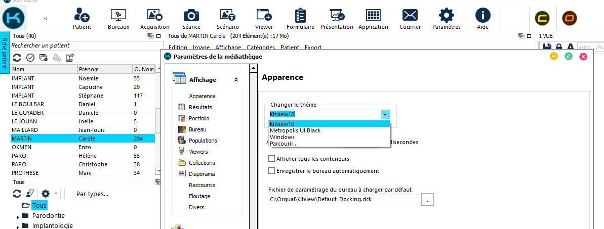
Couleurs du bureau
Pour changer les couleurs de votre écran Kitview (comme changer la couleur des murs de votre cabinet) : Ne vous inquiétez pas, c'est très simple ! Vous pouvez modifier les couleurs de votre logiciel pour qu'il vous plaise davantage, exactement comme vous choisiriez la peinture de votre bureau.
- Cliquez sur« Bureaux »
- Cliquez sur l'option « Couleurs du bureau » pour changer l'apparence de votre écran principal. C'est comme choisir la couleur des murs de votre cabinet cela personnalise votre espace de travail selon vos préférences.
- Choisissez les couleurs souhaitées pour chaque élément
- Cliquez sur« OK »pour valider
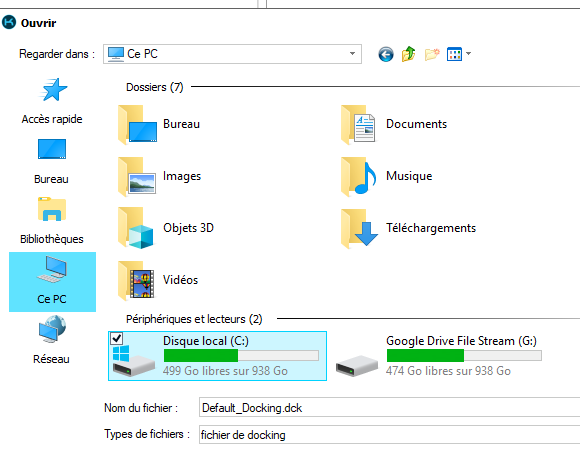
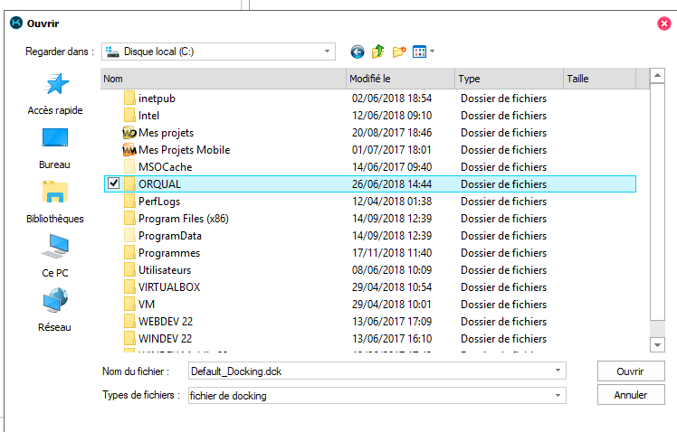
Taille des vignettes
Ne vous inquiétez pas, c'est très simple ! Vous pouvez changer la taille des petites images (qu'on appelle "miniatures") qui s'affichent à l'écran. Imaginez que vous regardez un album photo : parfois vous voulez voir les photos plus grandes pour mieux les distinguer, parfois plus petites pour en voir plus à la fois. C'est exactement pareil ici vous pouvez agrandir ou rétrécir ces petites images selon ce qui vous convient le mieux.
- Cliquez sur« Paramètres »
- Ne vous inquiétez pas, c'est très simple ! Pour voir vos résultats, cliquez d'abord sur le menu « Affichage » en haut de votre écran (comme si vous ouvriez un tiroir), puis choisissez « Résultats » dans la liste qui apparaît. C'est comme ouvrir un album photo pour regarder vos images.
- Changez la taille d'affichage de vos petites photos (appelées "vignettes") Ne vous inquiétez pas, c'est très simple ! Les vignettes sont comme des petites versions de vos photos qui s'affichent à l'écran pensez aux petites images que vous voyez dans un album photo avant de cliquer pour les agrandir. Vous pouvez les rendre plus grandes si vous voulez mieux voir les détails, ou plus petites si vous voulez en voir plus à la fois sur votre écran. Ajustez simplement la valeur selon votre préférence.
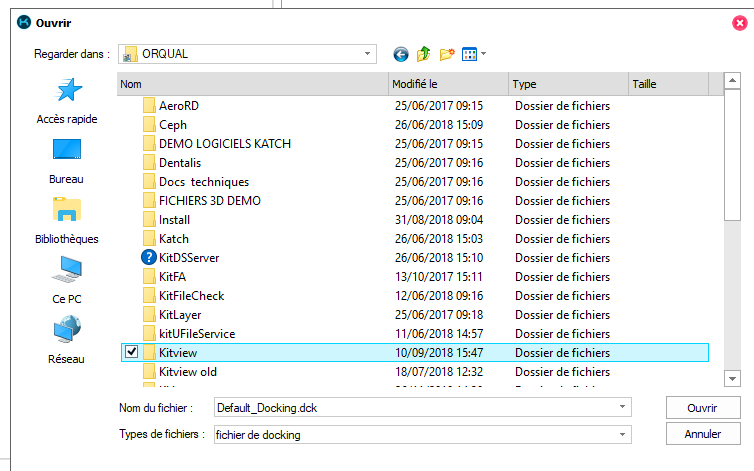
Personnaliser la couleur de sélection des photos
- Cliquez sur« Paramètres »
- Ne vous inquiétez pas, c'est très simple ! Pour voir vos résultats, cliquez d'abord sur le menu « Affichage » en haut de votre écran (comme si vous ouvriez un tiroir), puis choisissez « Résultats » dans la liste qui apparaît. C'est comme ouvrir un album photo pour regarder vos images.
- Changer la couleur qui met en surbrillance vos photos sélectionnées Ne vous inquiétez pas, c'est très simple ! Quand vous cliquez sur une photo dans Kitview, elle se colore pour montrer qu'elle est sélectionnée comme quand vous surlignez du texte avec un feutre. Vous pouvez choisir cette couleur selon vos préférences : bleu, vert, rouge... C'est juste pour vous aider à mieux voir quelles photos vous avez choisies dans votre album.
4. Import / Export de documents
Importer des photos
Ne vous inquiétez pas, ajouter des photos dans le dossier d'un patient est très simple ! Kitview vous propose plusieurs façons de faire, comme si vous aviez plusieurs chemins pour ranger une photo dans un album. Nous allons voir ensemble toutes ces possibilités pour que vous puissiez choisir celle qui vous convient le mieux.
Méthode 1 : Glisser-déposer depuis Windows
- Sélectionnez le patient concerné
- Ouvrez l'explorateur Windows avec vos photos
- Sélectionnez les photos à importer
- Pour ajouter vos photos dans Kitview, c'est très simple ! Imaginez que vous déplacez des photos physiques dans un album : cliquez sur vos photos avec votre souris, maintenez le clic enfoncé, puis faites glisser vos photos vers la zone où vous voyez les petites images (qu'on appelle "vignettes"). Relâchez ensuite le clic de votre souris. Ne vous inquiétez pas, vos photos seront automatiquement ajoutées au dossier de votre patient !
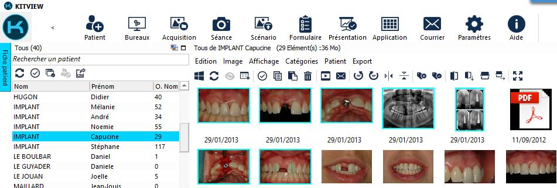
Méthode 2 : Import depuis Outlook
Vous pouvez ajouter des photos directement depuis vos emails dans Kitview, comme si vous déplaciez des photos de votre boîte mail vers un album photo numérique. Cette fonction pratique vous évite de sauvegarder d'abord les photos sur votre ordinateur : vous pouvez les transférer en une seule étape depuis l'email vers le dossier de votre patient. C'est très utile quand vous recevez des photos par email de vos patients ou confrères.
- Ouvrez l'email dans Outlook
- Sélectionnez la ou les pièces jointes
- Déplacez vos photos dans Kitview Pour ajouter des photos, c'est très simple : cliquez sur votre photo sur votre ordinateur, maintenez le bouton de la souris enfoncé, puis déplacez-la vers la fenêtre Kitview (comme si vous déposiez une photo dans un album). Relâchez le bouton : votre photo est automatiquement ajoutée ! Ne vous inquiétez pas, c'est aussi facile que de déplacer un fichier d'un dossier à un autre.
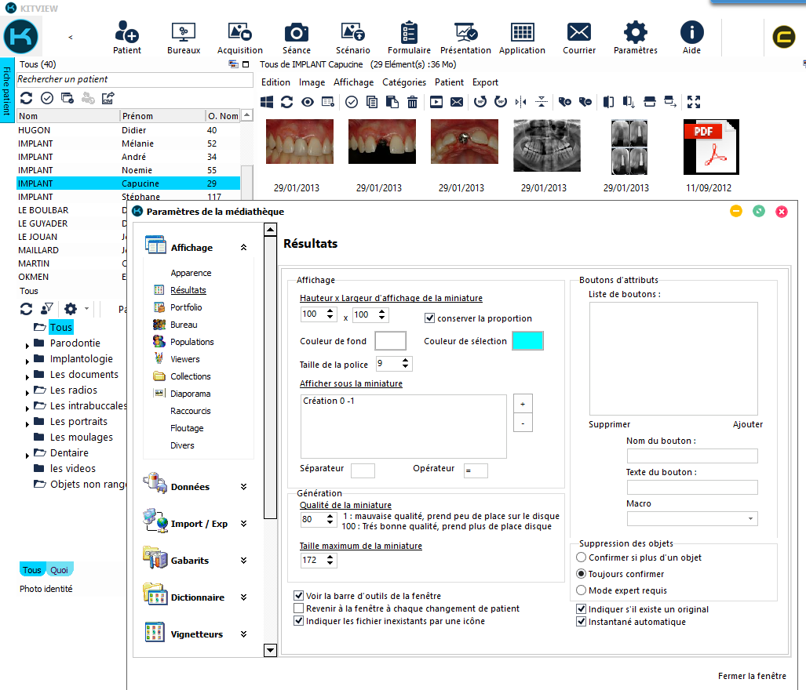
Exporter des photos
Pour copier vos photos de patients sur votre ordinateur Windows ou sur une clé USB (comme quand vous sauvegardez vos photos de vacances) : Ne vous inquiétez pas, c'est très simple ! Vous allez pouvoir récupérer toutes les photos de vos patients pour les utiliser ailleurs, exactement comme quand vous copiez des photos de votre téléphone sur votre ordinateur.
- Sélectionnez la ou les photos à exporter
- Faites unclic droit
- Pour exporter vos photos rapidement (comme faire une copie de vos images), suivez ces étapes simples : Cliquez d'abord sur le bouton "Exporter" (pensez-y comme "faire une copie") Dans le menu qui s'ouvre, choisissez "Export rapide" Ne vous inquiétez pas, cette fonction vous permet de sauvegarder vos photos facilement et rapidement, comme si vous faisiez des photocopies de documents importants.
- Choisissez le dossier de destination
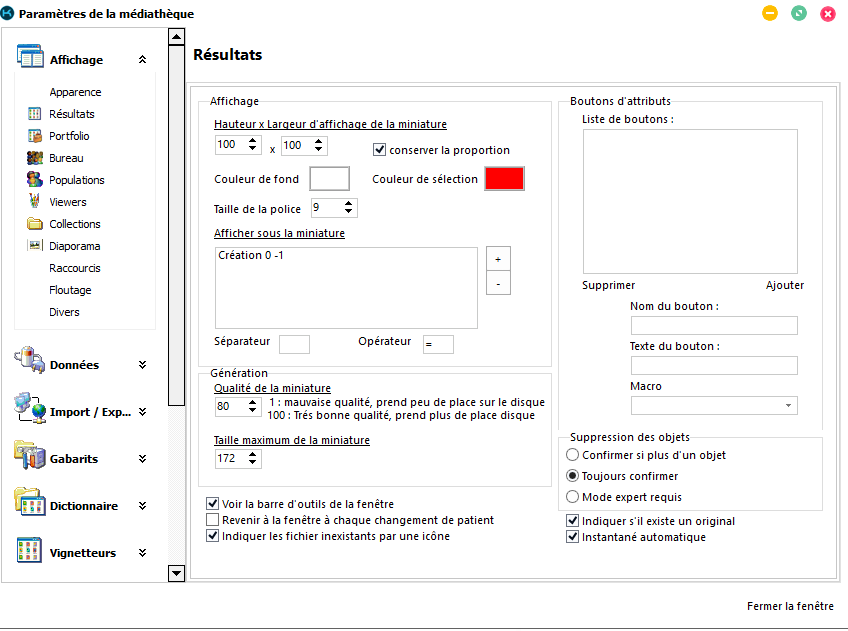
Glisser-déposer avancé
- Envoyer vos photos vers Kitview : comment ajouter facilement vos images de patients Cette fonction vous permet d'ajouter des photos de vos patients dans Kitview, comme si vous rangiez des photos dans un album. Ne vous inquiétez pas, c'est très simple !
- Depuis Kitview : pour envoyer vos photos vers votre ordinateur Windows, par email, ou vers d'autres applications. Ne vous inquiétez pas, c'est comme faire un "copier-coller" de vos photos depuis l'album Kitview vers l'endroit où vous en avez besoin.
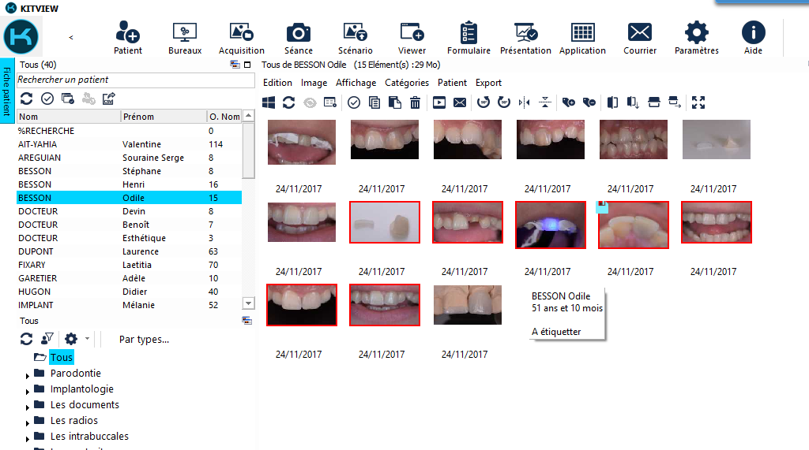
Configuration du format de nom des pièces jointes
Pour changer le nom de vos photos quand vous les sauvegardez sur votre ordinateur : Ne vous inquiétez pas, c'est comme renommer des photos dans un album vous pouvez choisir le nom que vous voulez donner à chaque image avant de la sauvegarder. Cette option vous permet de personnaliser les noms pour mieux vous y retrouver.
- Cliquez sur« Paramètres »
- Sélectionnez« Courrier »
- Choisissez comment vous voulez que les noms apparaissent en utilisant des codes simples. Par exemple : tapez %n pour afficher le nom de famille, %p pour le prénom. Ne vous inquiétez pas, c'est comme remplir un formulaire automatique le logiciel remplacera ces codes par les vraies informations de vos patients.

5. Séances photos
Protocole de séance
Le protocole, c'est comme une recette de cuisine qui vous guide étape par étape ! Il vous montre dans quel ordre prendre vos photos du patient, en suivant une liste prédéfinie. Pour chaque photo, des gabarits (comme des modèles) s'affichent à l'écran pour vous aider à bien positionner votre appareil photo. Ne vous inquiétez pas, c'est très simple : il suffit de suivre les instructions une par une, comme si vous suiviez les étapes d'une recette !
- Sélectionnez le patient
- Cliquez sur« Séance »
- Cliquez sur« Commencer la séance »
- Ne vous inquiétez pas, c'est très simple ! Le logiciel va vous montrer des modèles de photos à l'écran (comme des exemples à suivre). Voici comment procéder pas à pas : Regardez le premier modèle qui apparaît sur votre écran Positionnez votre appareil photo pour reproduire exactement la même vue Prenez la photo Le logiciel passera automatiquement au modèle suivant Répétez jusqu'à avoir toutes les photos nécessaires Pensez à cela comme suivre une recette de cuisine : chaque étape vous guide vers le résultat parfait pour le dossier de votre patient.

L'écran pour prendre des photos avec les guides de placement Ne vous inquiétez pas, c'est comme avoir un assistant qui vous montre exactement où placer votre appareil photo ! Quand vous prenez des photos de vos patients, des guides transparents s'affichent sur votre écran pour vous aider à bien positionner chaque photo. C'est simple : il suffit de faire correspondre ce que vous voyez avec le guide affiché.
Acquisition WiFi
Kitview peut recevoir automatiquement les photos prises avec un appareil photo spécial qui se connecte à Internet (appelé "appareil photo WiFi"). C'est comme si votre appareil photo pouvait envoyer directement les photos dans votre ordinateur, sans avoir besoin de câbles ou de cartes mémoire. Dès que vous prenez une photo du sourire de votre patient, elle arrive automatiquement dans Kitview c'est très pratique et cela vous fait gagner du temps ! Ne vous inquiétez pas, la configuration de cette fonction est expliquée étape par étape dans les sections suivantes.
- Connectez votre appareil photo au WiFi (internet sans fil) Pour que votre appareil photo puisse "parler" avec le logiciel Kitview sur votre ordinateur, vous devez l'activer en mode WiFi. C'est comme brancher un téléphone sans fil à sa base : cela permet aux deux appareils de communiquer à distance. Ne vous inquiétez pas, c'est plus simple qu'il n'y paraît ! Cherchez dans les réglages de votre appareil photo une option appelée "WiFi" ou représentée par le symbole des ondes WiFi, puis activez-la.
- Dans Kitview, cliquez sur« Acquisition »
- Sélectionnez« WiFi »
- Les photos sont reçues automatiquement
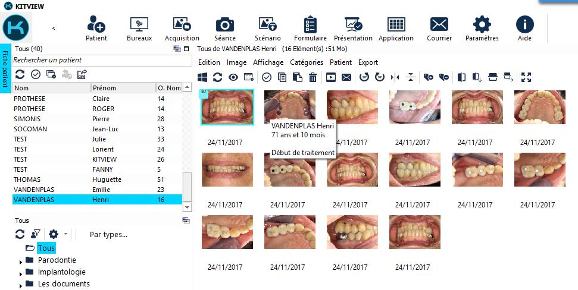
6. Gabarits et mots-clés
Les gabarits, c'est comme des règles de rangement automatique pour vos photos imaginez un assistant qui range vos photos dans les bons dossiers pour vous ! Ne vous inquiétez pas, c'est plus simple qu'il n'y paraît. Le logiciel va regarder les mots-clés de vos photos (par exemple "sourire", "profil", "avant traitement") et les classer automatiquement au bon endroit. Pour créer votre propre règle de rangement personnalisée, c'est très facile il suffit de suivre 3 étapes simples que nous allons voir ensemble :
Étape 1 : Créer le mot-clé dans le dictionnaire
- Cliquez sur« Paramètres »
- Ne vous inquiétez pas, c'est très simple ! Pour accéder au dictionnaire des termes médicaux (comme un petit carnet de vocabulaire spécialisé), suivez ces étapes : Cliquez d'abord sur le menu « Dictionnaire » (vous le trouverez dans la barre de menus en haut) Puis sélectionnez « Thésaurus de votre domaine » (c'est la liste de tous les termes techniques de l'orthodontie que le logiciel connaît) C'est comme ouvrir un dictionnaire médical intégré à votre logiciel !
- Cliquez sur le bouton « Tout développer » pour afficher toutes les familles de patients. C'est comme ouvrir tous les dossiers d'un classeur d'un coup pour voir tout le contenu. Ne vous inquiétez pas, c'est très simple : un seul clic suffit pour avoir une vue d'ensemble de tous vos patients.
- Choisissez le bon patient dans votre liste. C'est comme chercher le bon dossier dans un classeur : cliquez simplement sur le nom de la famille du patient que vous voulez consulter. Ne vous inquiétez pas, vous pouvez toujours changer de patient si vous vous trompez.
- Cliquez sur« Créer une nouvelle étiquette »
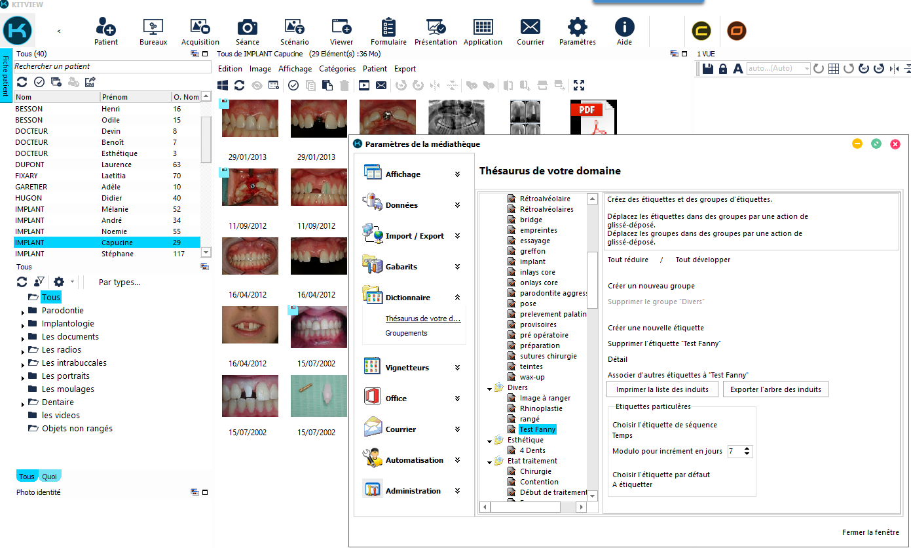
Écran pour organiser vos mots-clés Cet écran vous permet de gérer vos mots-clés, comme si vous organisiez les étiquettes dans un classeur. Les mots-clés vous aident à retrouver rapidement vos photos de patients. Par exemple, vous pouvez créer des étiquettes comme "avant traitement", "après traitement", ou "appareil dentaire". Ne vous inquiétez pas, c'est très simple à utiliser !
Étape 2 : Créer le gabarit
- Cliquez sur« Paramètres »
- Pour accéder aux outils prédéfinis, cliquez d'abord sur le menu "Gabarits" en haut de votre écran, puis choisissez "Boîte à outils". C'est comme ouvrir une boîte qui contient tous les modèles prêts à utiliser pour vos photos de patients.
- Ne vous inquiétez pas, créer une nouvelle famille est très simple ! Pensez à cela comme ajouter un nouveau dossier dans un classeur. Voici comment faire étape par étape : Placez votre curseur sur le nom d'une famille existante dans votre liste Faites un clic droit (appuyez sur le bouton droit de votre souris) Dans le petit menu qui apparaît, cliquez sur "Ajouter" Une nouvelle famille sera créée automatiquement C'est aussi simple que cela ! Vous pourrez ensuite renommer cette nouvelle famille avec le nom de votre patient.
- Cliquez sur« Créer un nouveau gabarit »
- Pour ajouter une photo à votre modèle (comme ajouter une image dans un cadre photo), cliquez simplement sur le bouton « Charger une image ». Ne vous inquiétez pas, c'est très simple : une fenêtre s'ouvrira pour vous permettre de choisir la photo que vous souhaitez depuis votre ordinateur, exactement comme lorsque vous sélectionnez une photo pour l'envoyer par email.
- Remplissez le champ « Désignation » c'est comme donner un nom à votre dossier. Tapez simplement le nom que vous voulez donner dans la case prévue à cet effet. Ne vous inquiétez pas, vous pourrez toujours le modifier plus tard si nécessaire.
- Double-cliquez sur la famille que vous venez de créer (comme si vous ouvriez un dossier sur votre ordinateur) pour y associer le mot-clé. C'est comme ouvrir un classeur pour y ranger un document : un double-clic suffit pour accéder à l'intérieur et faire le lien entre votre famille et le mot-clé choisi.
- Cliquez sur« Valider »
![Comment créer un modèle de présentation pour vos photos Ne vous inquiétez pas, créer un gabarit (ou modèle) dans Kitview, c'est comme préparer un album photo vide que vous pourrez réutiliser. Imaginez que vous créez un cadre personnalisé où vous placerez les photos de vos patients de la même manière à chaque fois. Voici comment procéder étape par étape : Cette fonction vous permet de préparer la mise en page de vos photos avant même de les prendre Une fois créé, ce modèle vous fera gagner du temps car vous n'aurez plus qu'à y glisser les nouvelles photos C'est particulièrement pratique pour présenter les cas de vos patients de façon professionnelle et cohérente](img/page32_img01.png)
Créer un nouveau modèle de présentation Cette fenêtre vous permet de créer un modèle personnalisé pour organiser vos photos de patients. Pensez à cela comme à créer un album photo type que vous pourrez réutiliser pour tous vos patients. Ne vous inquiétez pas, c'est plus simple qu'il n'y paraît !
Étape 3 : Créer le filtre (collection)
- Ne vous inquiétez pas, c'est très simple ! Regardez à gauche de votre écran : vous verrez une liste qui ressemble à un arbre avec des branches (on appelle cela l'arborescence). Trouvez le mot "Tous" dans cette liste. Placez votre souris sur ce mot "Tous", puis appuyez sur le bouton droit de votre souris (pas le gauche comme d'habitude). Un petit menu va alors apparaître.
- Cliquez sur le bouton « Ajouter une collection à la racine ». Ne vous inquiétez pas, c'est comme créer un nouveau dossier principal dans votre classeur de photos la "racine" signifie simplement que votre nouvelle collection sera au niveau principal, pas à l'intérieur d'une autre collection existante.
- Donnez un nom à votre nouvelle collection de photos (pensez-y comme créer un nouvel album photo). Ce nom doit être exactement le même que le mot-clé que vous avez choisi. Par exemple, si votre mot-clé est "appareil", nommez votre collection "appareil". C'est simple : un nom = un mot-clé identique.
- Cliquez sur« Ajouter une condition »
- Choisissez le mot-clé que vous venez de créer à l'étape précédente. Ne vous inquiétez pas, c'est simple : regardez dans la liste qui s'affiche et cliquez sur le mot-clé que vous avez ajouté juste avant. C'est comme choisir une étiquette dans votre boîte à étiquettes pour la coller sur un dossier.
- Cliquez sur« Valider »
![Comment créer un filtre pour trier vos photos Un filtre, c'est comme un système de tri pour vos photos de patients. Imaginez que vous avez un grand album photo et que vous voulez rapidement retrouver certaines images selon des critères précis (par exemple, toutes les photos d'un patient particulier ou toutes les photos prises à une certaine date). Ne vous inquiétez pas, c'est très simple à utiliser ! Le filtre va vous aider à organiser et retrouver rapidement les bonnes photos parmi toutes celles stockées dans Kitview.](img/page34_img01.jpeg)
Modifier l'image d'un gabarit existant
- Pour accéder aux outils, suivez ces étapes simples : Cliquez d'abord sur le bouton « Paramètres » (comme si vous ouvriez un tiroir de rangement) Puis sélectionnez « Gabarits » (ce sont vos modèles de mise en page) Enfin, cliquez sur « Boîte à outils » (votre coffre à outils numériques) Ne vous inquiétez pas, chaque clic vous mène simplement vers l'étape suivante !
- Choisissez le modèle de photo que vous souhaitez personnaliser Ne vous inquiétez pas, c'est simple ! Un gabarit (ou modèle) est comme un patron de couture : il définit comment vos photos seront organisées et présentées. Vous allez simplement cliquer sur celui que vous voulez modifier parmi la liste proposée.
- Cliquez sur le bouton « Modifier le gabarit sélectionné » pour personnaliser votre modèle de présentation. Ne vous inquiétez pas, c'est comme modifier un modèle de document vous pourrez ajuster la mise en page selon vos besoins.
- Cliquez sur« Charger une image »
- Sélectionnez la nouvelle image
- Cliquez sur« Valider »
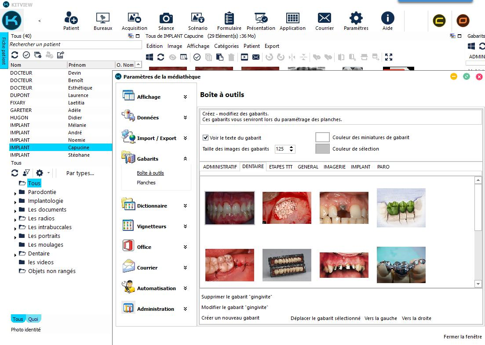
7. Viewers
Présentation des viewers
Les viewers, c'est comme avoir plusieurs écrans de télévision dans votre cabinet pour regarder les photos de vos patients. Imaginez que vous avez plusieurs cadres photo géants sur votre bureau c'est exactement ce que font les viewers dans Kitview. Ces zones d'affichage vous permettent de voir les photos de vos patients en très grand, comme si vous les agrandissiez avec une loupe. Ne vous inquiétez pas, c'est très simple à utiliser ! Vous pouvez créer autant de viewers que vous voulez un pour les photos de face, un autre pour les profils, un troisième pour les photos intra-orales... C'est vous qui décidez ! Chaque viewer peut être personnalisé selon vos besoins, comme si vous choisissiez la taille et l'emplacement de chaque cadre photo dans votre cabinet.
Kitview propose plusieurs modes d'affichage :
- 1 Vue : une seule photo en grand
- 2 Vues : deux photos côte à côte pour comparaison
- 4 Vues : afficher quatre photos ensemble pour avoir une vue d'ensemble Cette option vous permet de voir quatre photos en même temps sur votre écran, comme si vous regardiez quatre photos posées côte à côte sur une table. C'est très pratique pour comparer différents angles ou suivre l'évolution d'un traitement en un seul coup d'œil.
- Les gabarits : comment vos photos s'affichent selon les modèles choisis Ne vous inquiétez pas, c'est très simple ! Un gabarit, c'est comme un moule à gâteau : il donne une forme précise à vos photos d'orthodontie. Imaginez que vous avez un album photo avec différents types de pages : certaines pour une seule grande photo, d'autres pour plusieurs petites photos côte à côte. Dans Kitview, les gabarits fonctionnent exactement pareil ! Quand vous choisissez un gabarit (ou "template"), le logiciel arrange automatiquement vos photos selon ce modèle. Par exemple, un gabarit peut afficher les photos "avant/après" côte à côte, ou organiser toutes les vues d'un patient sur une seule page. C'est le logiciel qui fait tout le travail d'arrangement pour vous !
- Portfolio : voir vos photos comme dans un album Le portfolio vous permet de voir toutes les photos de votre patient regroupées ensemble, comme si vous feuilletiez un album photo. Ne vous inquiétez pas, c'est très simple à utiliser ! Toutes les images s'affichent côte à côte pour que vous puissiez facilement comparer l'évolution du traitement de votre patient.
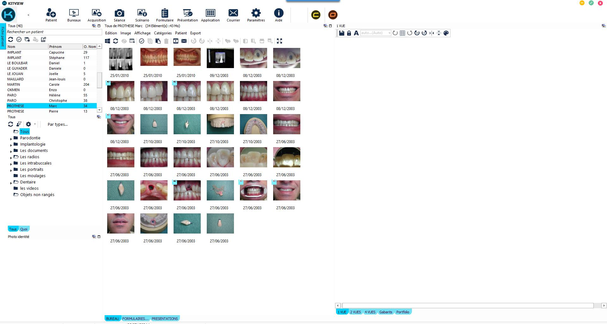
Mode 1 Vue
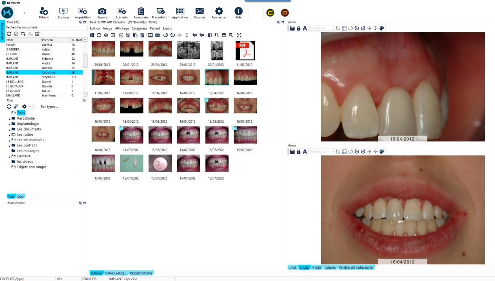
Mode 2 Vues
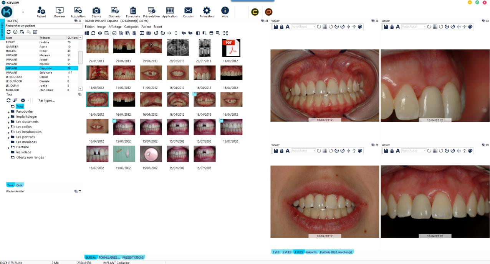
Le Mode 4 Vues vous permet de voir 4 photos en même temps sur votre écran, comme si vous regardiez 4 photos posées côte à côte sur votre bureau. C'est très pratique pour comparer l'évolution du traitement de votre patient par exemple, vous pouvez voir les photos du début, du milieu et de la fin du traitement d'un seul coup d'œil. Ne vous inquiétez pas, c'est très simple à utiliser et cela vous fera gagner beaucoup de temps !
Sélectionner les photos à afficher
- Ne vous inquiétez pas, c'est très simple ! En haut de votre écran, vous verrez des onglets comme des étiquettes de classeur. Cliquez sur l'un d'eux selon ce que vous voulez voir : « 1 Vue » pour voir une seule photo à la fois (comme regarder une photo dans vos mains) « 2 Vues » pour comparer deux photos côte à côte « 4 Vues » pour voir quatre photos en même temps sur votre écran Cliquez simplement sur l'onglet de votre choix pour changer d'affichage.
- Cliquez sur la photo souhaitée ou faites un glisser-déposer
Personnaliser les viewers
Mettre les viewers à la même taille
- Quand vous affichez 4 photos en même temps à l'écran (comme si vous aviez 4 photos étalées sur votre bureau), vous pouvez les réorganiser facilement. Regardez en haut à droite de votre écran : vous verrez une petite icône appelée "Réorganiser les fenêtres sœurs". Cliquez simplement dessus avec votre souris. Ne vous inquiétez pas, c'est très simple cette fonction vous permet de mieux organiser vos 4 photos pour les voir plus clairement.
- Pour ajuster manuellement la taille : placez votre souris sur la ligne qui sépare les deux zones (comme une frontière invisible). Vous verrez apparaître une petite flèche à double sens ↔. C'est le signal que vous pouvez maintenant faire glisser cette ligne pour agrandir ou rétrécir les zones, comme si vous déplaciez une cloison. Ne vous inquiétez pas, c'est très simple !
- Cliquez avec le bouton gauche de votre souris et maintenez ce bouton enfoncé (ne le relâchez pas). Tout en gardant le bouton appuyé, bougez votre souris pour ajuster l'élément. C'est comme si vous faisiez glisser un objet sur votre bureau vous le tenez fermement et vous le déplacez où vous voulez.
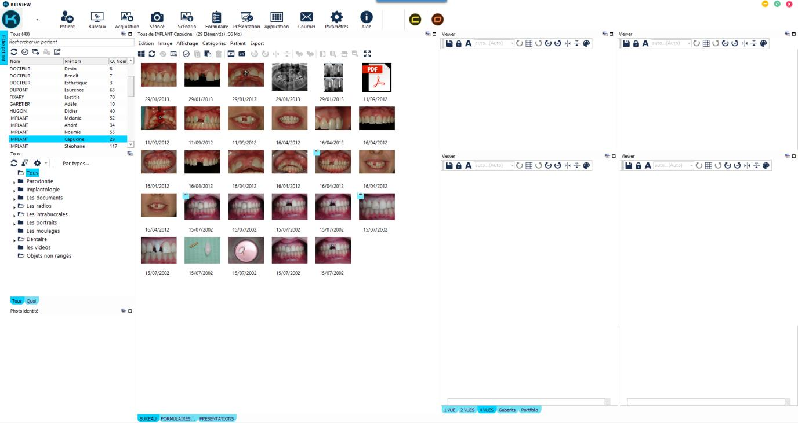
Personnaliser la barre d'outils des viewers
- Placez votre souris dans la zone d'affichage des photos (l'écran où vous voyez vos images), puis cliquez sur le bouton droit de votre souris. Ne vous inquiétez pas, c'est comme ouvrir un menu dans n'importe quel logiciel cela va faire apparaître une liste d'options disponibles.
- Cliquez sur le bouton « Personnaliser les menus ». Ne vous inquiétez pas, c'est comme réorganiser les raccourcis sur votre bureau d'ordinateur vous allez pouvoir choisir quels outils apparaissent en priorité selon vos besoins.
- Choisissez les barres d'outils que vous souhaitez voir à l'écran Les barres d'outils, c'est comme une boîte à outils sur votre bureau : elles contiennent tous les boutons dont vous avez besoin pour travailler avec vos photos de patients. Ne vous inquiétez pas, vous pouvez facilement décider lesquelles afficher ou masquer selon vos préférences. Cochez simplement celles que vous trouvez utiles vous pourrez toujours changer d'avis plus tard.
- Pour appliquer le même affichage à toutes vos fenêtres de photos (ne vous inquiétez pas, c'est très simple) : faites un clic droit avec votre souris sur la photo, puis choisissez "Appliquer ce menu aux autres viewers". C'est comme si vous disiez au logiciel "utilise les mêmes réglages pour toutes mes autres photos ouvertes". Cela vous évite de refaire la même manipulation sur chaque photo une par une.
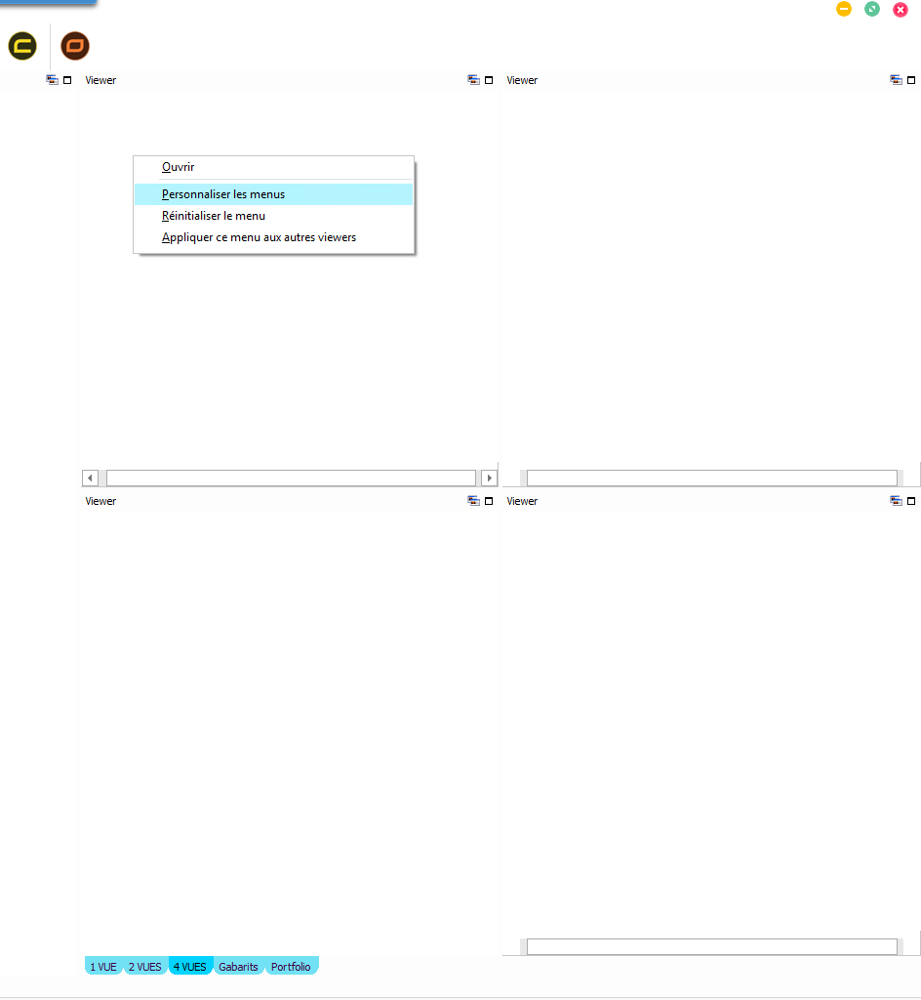
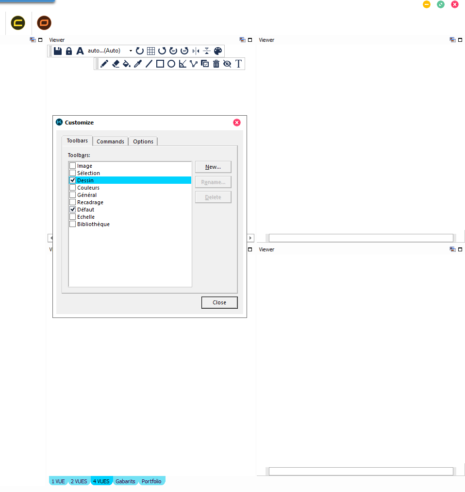
Modifier l'incrustation des informations
Pour modifier les informations affichées sur les photos (date, nom, etc.) :
- Cliquez sur« Paramètres »
- Pour accéder aux options d'affichage, ne vous inquiétez pas, c'est très simple ! Cliquez d'abord sur le menu « Affichage » en haut de votre écran (comme quand vous ouvrez un tiroir), puis dans la liste qui s'affiche, cliquez sur « Divers ». C'est comme ouvrir un classeur puis choisir la bonne section.
- Double-cliquez sur "Viewers" (cela signifie cliquer deux fois rapidement avec votre souris sur ce mot). Ne vous inquiétez pas, c'est comme ouvrir un dossier sur votre bureau d'ordinateur.
- Personnalisez l'apparence de vos photos : vous pouvez changer leur taille (les rendre plus grandes ou plus petites), modifier leur couleur (comme appliquer un filtre), et choisir quelles informations afficher avec chaque photo (nom du patient, date, etc.). C'est comme organiser un album photo selon vos préférences !
- Cliquez sur le point d'interrogation « ? » pour découvrir tous les codes que vous pouvez utiliser. Ne vous inquiétez pas, c'est très simple ! Ces petits codes sont comme des raccourcis magiques : par exemple, %c ajoutera automatiquement la date, et %n ajoutera le nom du patient. C'est comme utiliser des étiquettes qui se remplissent toutes seules !
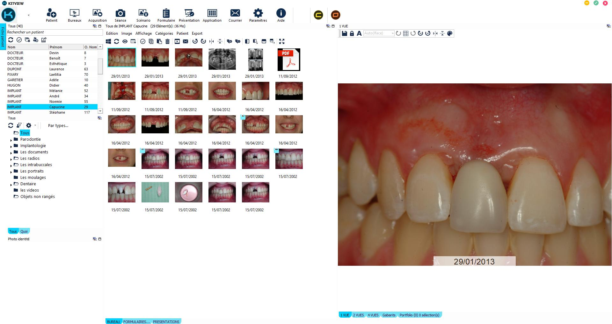
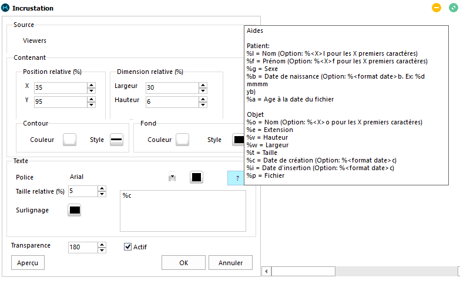
Ajouter des viewers
- Pour accéder aux réglages principaux du logiciel, suivez ces étapes simples : En haut de votre écran, cliquez sur le bouton "Paramètres" (comme lorsque vous réglez votre téléphone) Dans le menu qui s'ouvre, choisissez "Administration" Puis cliquez sur "Général" Ne vous inquiétez pas, ces réglages vous permettront de personnaliser votre logiciel selon vos besoins. C'est comme organiser votre bureau de travail à votre façon !
- Activez le "Mode Expert" en cochant la case correspondante. Ne vous inquiétez pas, cette option vous donne simplement accès à plus de fonctionnalités avancées comme passer d'un mode simple à un mode complet dans votre appareil photo. Vous pouvez toujours revenir au mode normal si besoin.
- Ne vous inquiétez pas, c'est très simple ! Pour réorganiser votre bureau (comme ranger votre bureau physique), suivez ces étapes : Cliquez d'abord sur le bouton « Bureaux » (vous le trouverez dans le menu principal) Puis cliquez sur « Réorganiser le bureau » C'est comme si vous vouliez réaménager votre espace de travail pour mieux vous organiser !
- Des icônes apparaissent sur l'interface
- Dans l'onglet "Viewer" (c'est comme l'onglet d'un classeur qui vous permet de voir les photos), cliquez sur le bouton "Ajouter un viewer". Ne vous inquiétez pas, c'est très simple : cherchez ce bouton à l'écran et cliquez dessus avec votre souris.
- Une nouvelle fenêtre s'ouvre pour voir vos photos c'est comme ouvrir un album photo sur votre écran. Ne vous inquiétez pas, c'est très simple à déplacer ! Vous pouvez changer sa position exactement comme vous le souhaitez : utilisez les petites flèches de direction (↑ ↓ ← →) sur votre clavier les mêmes que pour jouer ou naviguer. Appuyez doucement sur ces flèches pour faire glisser la fenêtre vers le haut, le bas, la gauche ou la droite jusqu'à trouver l'emplacement parfait sur votre écran.
- Pour changer le nom de votre onglet (comme renommer un dossier), c'est très simple : faites un clic droit avec votre souris sur l'onglet, puis cliquez sur « Rename » dans le petit menu qui apparaît. Ne vous inquiétez pas, vous pourrez toujours le modifier à nouveau si besoin !
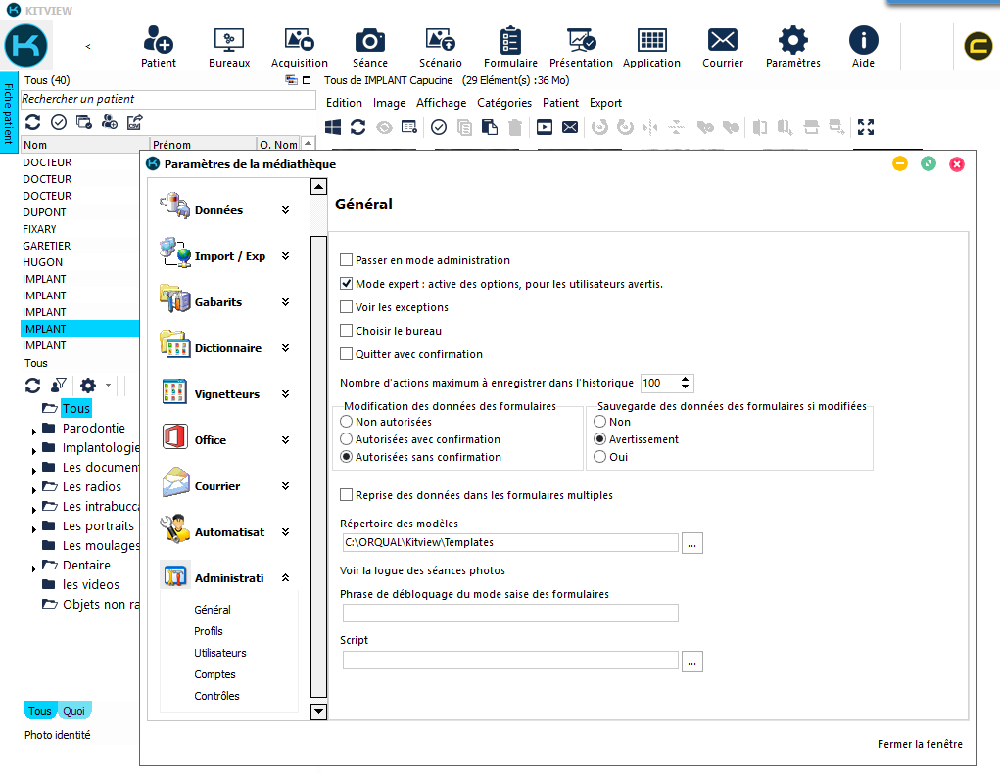
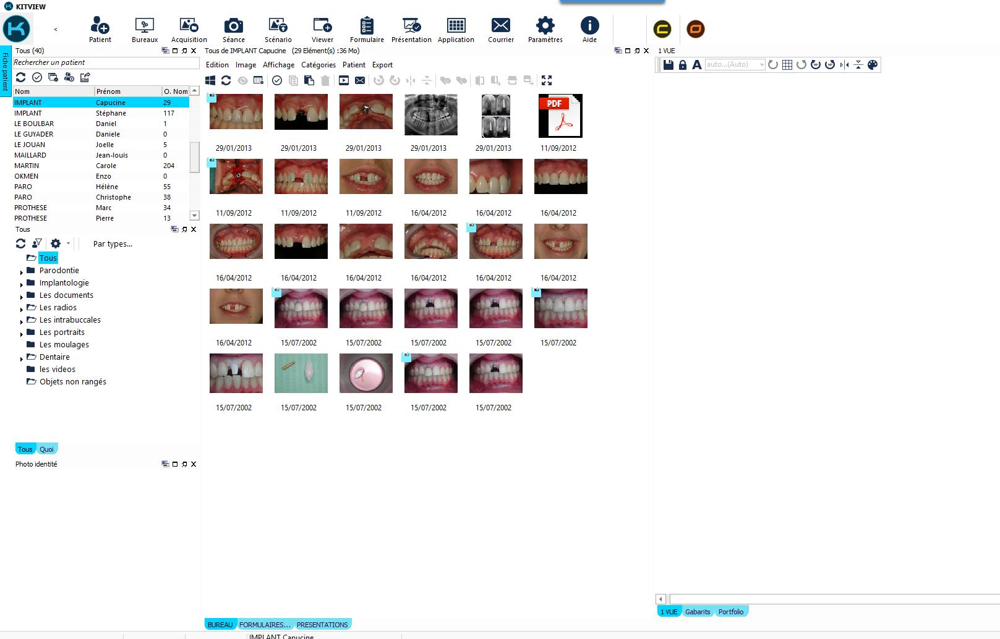
8. Modification de photos
Copier-coller une photo
Pour faire une copie d'une photo dans le dossier de votre patient : Ne vous inquiétez pas, c'est comme faire une photocopie d'un document ! Vous allez créer une deuxième version identique de la photo qui restera dans le même dossier patient. C'est très utile si vous voulez garder l'original intact et modifier la copie, ou tout simplement avoir deux versions de la même image.
Méthode 1 : Menu contextuel
- Faites un clic droit sur la photo à dupliquer
- Cliquez sur« Edition »
- Cliquez sur« Copier »
- Cliquez sur« Coller »
![Copier-coller une photo (dupliquer une image) Cette fonction vous permet de faire une copie d'une photo existante, comme quand vous photocopiez un document. C'est très utile si vous voulez utiliser la même photo à plusieurs endroits sans la déplacer de son emplacement original. Pour copier-coller une photo : Cliquez d'abord sur la photo que vous voulez copier Faites un clic droit et choisissez "Copier" Allez à l'endroit où vous voulez placer la copie Faites un clic droit et choisissez "Coller" Ne vous inquiétez pas : la photo originale reste à sa place, vous créez simplement une copie identique ailleurs.](img/page58_img01.jpeg)
Méthode 2 : Menu Edition
- Sélectionnez la photo
- Cliquez sur le menu« Edition »en haut
- Cliquez sur« Copier »puis« Coller »
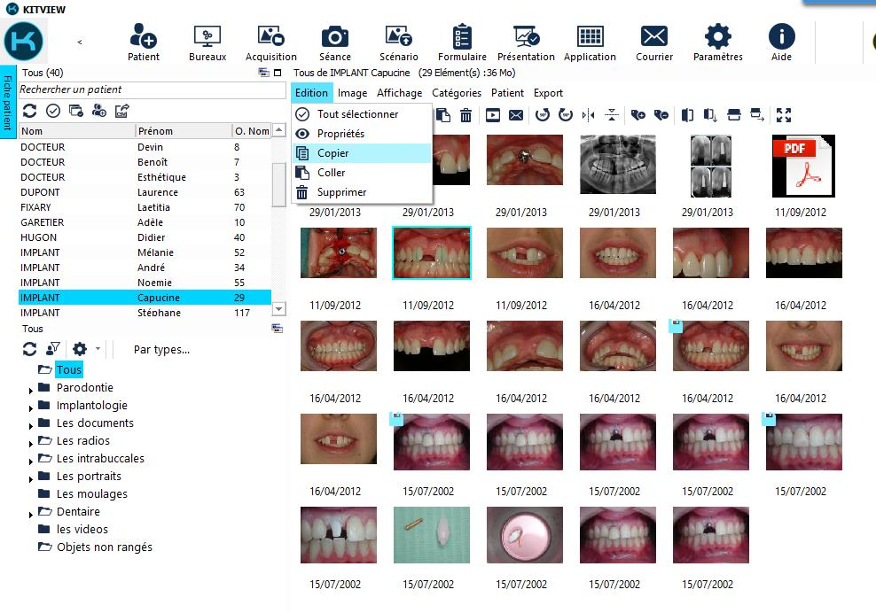
Modifier la luminosité
- Cliquez sur l'onglet "1 Vue" en haut de votre écran. C'est comme choisir la première page d'un album photo vous verrez cet onglet avec le chiffre "1" suivi du mot "Vue". Un simple clic dessus vous permettra d'accéder à cette section. Ne vous inquiétez pas, c'est très simple !
- Sélectionnez la photo à modifier
- Regardez en haut de votre écran où s'affichent les photos : vous verrez une barre avec plusieurs petites images (c'est la barre d'outils). Cherchez l'icône qui ressemble à une palette de peintre et cliquez dessus avec votre souris. Ne vous inquiétez pas, c'est facile à repérer !
- Modifiez la luminosité (pour rendre la photo plus claire ou plus sombre) et le contraste (pour avoir des couleurs plus vives ou plus douces) en déplaçant les petites barres avec votre souris. C'est comme régler la luminosité de votre télévision : glissez vers la droite pour augmenter, vers la gauche pour diminuer. Ne vous inquiétez pas, vous pouvez essayer plusieurs fois jusqu'à obtenir le résultat souhaité.
- La photo de gauche montre le résultat, celle de droite l'original
- Cliquez sur« OK »
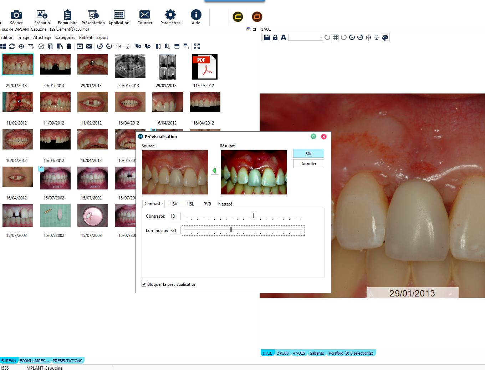
Régler la luminosité et le contraste de vos photos Cette fonction vous permet d'améliorer la qualité de vos photos, comme quand vous réglez la luminosité de votre écran de télévision. Ne vous inquiétez pas, c'est très simple ! Vous pouvez rendre vos photos plus claires ou plus sombres (luminosité) et ajuster la différence entre les zones claires et foncées (contraste) pour mieux voir les détails.
Revenir à la photo d'origine
Si vous avez retouché une photo de patient et que vous voulez retrouver la photo d'origine (comme si vous n'aviez jamais fait de modifications) : Ne vous inquiétez pas, c'est tout à fait possible ! Kitview garde toujours une copie de votre photo originale, comme une sauvegarde. Voici comment faire étape par étape :
- Faites un clic droit sur la photo modifiée
- Sélectionnez« Image »
- Cliquez sur« Revenir à l'original »
- Rafraîchissez si nécessaire
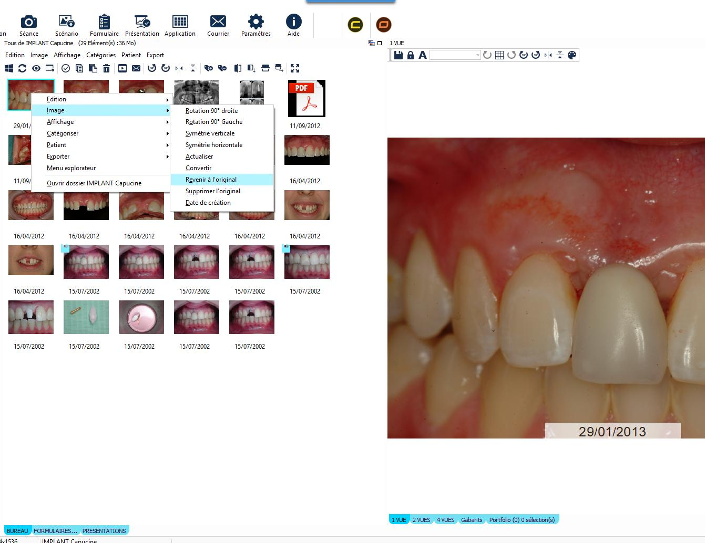
Modifier avec Paint
Si vous voulez modifier vos photos de manière plus poussée avec un autre logiciel de retouche : Ne vous inquiétez pas, c'est comme utiliser un autre outil plus spécialisé pour perfectionner vos photos, comme un photographe professionnel le ferait. Vous pourrez ensuite ramener votre photo modifiée dans Kitview.
- Faites un clic droit sur la photo
- Cliquez sur « Menu Explorateur » (ne vous inquiétez pas, c'est comme ouvrir un tiroir pour accéder à vos dossiers de photos)
- Pour modifier votre photo, cliquez sur le bouton « Ouvrir avec », puis sélectionnez « Paint ». Paint est un logiciel simple de dessin déjà installé sur votre ordinateur, comme une boîte de crayons numérique. C'est parfait pour faire des modifications basiques sur vos photos.
- Modifiez vos informations Ne vous inquiétez pas, c'est très simple ! Quand vous voulez changer quelque chose dans votre dossier (comme le nom d'un patient ou une date), cliquez simplement sur la zone que vous souhaitez modifier. C'est comme corriger un texte dans un document : cliquez à l'endroit voulu, effacez ce qui ne va pas, et tapez la nouvelle information. Puis sauvegardez vos changements.
- Pour que vos modifications soient prises en compte dans Kitview, vous devez les enregistrer. C'est comme sauvegarder un document sur votre ordinateur ! Cliquez sur l'icône en forme de disquette (le petit carré avec une encoche) c'est le symbole universel pour "sauvegarder". Une fois que vous avez cliqué dessus, vos changements seront automatiquement appliqués et visibles dans le logiciel Kitview. Ne vous inquiétez pas, c'est une étape simple mais importante à ne pas oublier !
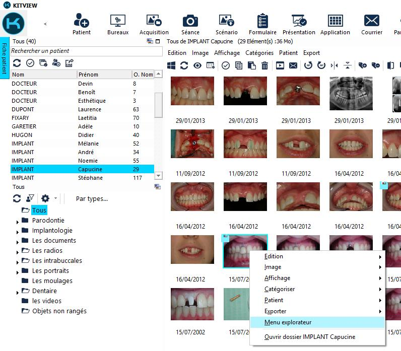
![Modifier vos photos avec Paint (le logiciel de dessin de Windows) Ne vous inquiétez pas, c'est très simple ! Paint est comme une boîte à outils de dessin sur votre ordinateur. Vous pouvez l'utiliser pour retoucher vos photos d'orthodontie par exemple pour ajouter des flèches, entourer une zone importante, ou écrire des notes. Pour ouvrir une photo dans Paint : Cliquez droit sur votre photo Choisissez "Ouvrir avec" puis "Paint" Votre photo s'ouvre comme sur une feuille de papier virtuelle Vous pouvez alors dessiner dessus avec les outils (pinceau, crayon) ou ajouter du texte, exactement comme si vous dessiniez sur papier !](img/page63_img01.jpeg)
Recadrer une photo
Pour garder seulement une partie de votre photo (comme découper une photo avec des ciseaux) : Ne vous inquiétez pas, c'est très simple ! Imaginez que vous voulez découper une photo papier pour ne garder que le visage du patient. C'est exactement la même chose, mais sur l'ordinateur. Voici comment faire étape par étape :
- Sélectionnez la photo
- Cliquez sur l'onglet« 1 Vue »
- Dans la barre d'outils (la rangée de boutons en haut de votre écran), cliquez sur l'outil "Sélection rectangle". Cet outil ressemble généralement à un petit carré en pointillés et vous permet de dessiner un cadre rectangulaire autour de la zone que vous voulez sélectionner, comme si vous encadriez une partie d'une photo avec vos mains.
- Dessinez un rectangle autour de la zone à conserver
- Cliquez sur l'outil « Massicot » (c'est comme des ciseaux virtuels) pour recadrer votre photo. Cet outil vous permet de couper les bords de votre image pour ne garder que la partie qui vous intéresse, exactement comme vous le feriez avec des ciseaux sur une photo papier.
- Cliquez sur l'icône disquette (le petit carré avec une encoche) pour sauvegarder vos modifications. C'est comme fermer un album photo après y avoir ajouté des images cela permet de conserver tout votre travail en sécurité.
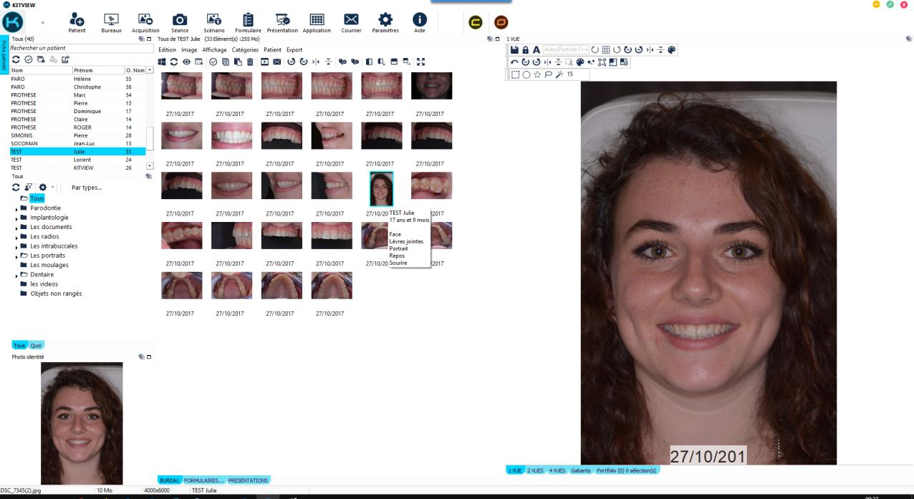
Outils de la barre viewers
- Rotation droite/gauche : faire pivoter la photo
- Symétrie horizontale/verticale : retourner votre photo comme dans un miroir Cette fonction vous permet de retourner votre photo, exactement comme si vous la regardiez dans un miroir. Ne vous inquiétez pas, c'est très simple : Symétrie horizontale : retourne la photo de gauche à droite (comme votre reflet dans un miroir) Symétrie verticale : retourne la photo de haut en bas (comme si vous la retourniez sens dessus dessous)
- Améliorer la qualité de vos photos : rendre plus clair ou plus sombre, ajuster les contrastes Ne vous inquiétez pas, c'est très simple ! Vous pouvez facilement améliorer vos photos en jouant sur deux réglages principaux : La luminosité : pour rendre votre photo plus claire (comme augmenter l'éclairage) ou plus sombre Le contraste : pour faire ressortir les détails (comme régler la netteté de votre télévision)
- Ajouter du texte sur votre photo : écrire des notes directement sur l'image Vous pouvez écrire des commentaires directement sur vos photos de patients, comme si vous écriviez des notes sur une photo papier avec un stylo. C'est très pratique pour pointer des détails importants ou noter vos observations. Ne vous inquiétez pas, c'est très simple à utiliser !
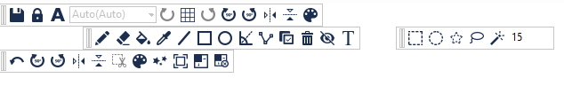
Outils disponibles pour regarder vos photos Ne vous inquiétez pas, c'est simple ! Quand vous regardez une photo de patient, vous avez accès à plusieurs outils pratiques, comme une boîte à outils complète. Ces boutons vous permettent de mieux voir et analyser les photos : vous pouvez par exemple zoomer pour voir les détails, faire pivoter l'image, ou ajuster la luminosité exactement comme avec les photos sur votre téléphone, mais avec des outils spécialement conçus pour le travail dentaire.
9. Présentations fixes
Les présentations fixes, c'est comme avoir un album photo automatique qui se crée tout seul ! Voici comment cela fonctionne : Quand vous prenez des photos de vos patients, vous leur donnez des petites étiquettes (qu'on appelle "mots-clés") par exemple "avant traitement", "6 mois après", etc. Les présentations fixes utilisent ces étiquettes pour créer automatiquement des comparaisons entre les photos un peu comme si vous mettiez côte à côte les photos "avant" et "après" d'un patient sur votre bureau. C'est très pratique pour : Montrer à vos patients leurs progrès (ils adorent voir l'évolution !) Présenter vos cas à d'autres orthodontistes Ne vous inquiétez pas, une fois que vos photos sont bien étiquetées, tout se fait automatiquement. C'est comme avoir un assistant qui range vos photos dans le bon ordre !
Accéder aux présentations
- Sélectionnez un patient
- Cliquez sur l'onglet« Présentation »
- Ne vous inquiétez pas, c'est très simple ! Regardez tout en bas de votre écran : vous verrez plusieurs options de présentation disponibles, comme si vous choisissiez différents modèles de mise en page pour vos photos. Cliquez simplement sur celle qui vous plaît le mieux pour changer l'apparence de vos images.
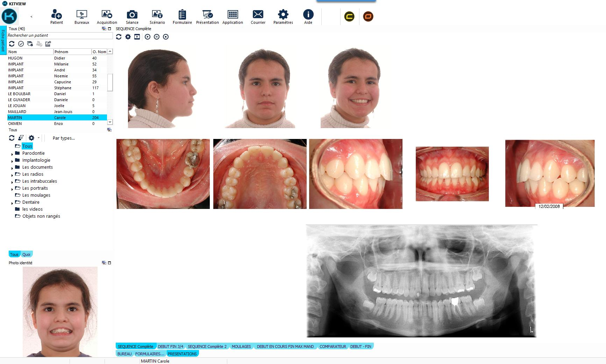
Comment utiliser l'écran des présentations fixes Ne vous inquiétez pas, cette section est plus simple qu'elle n'y paraît ! Les "présentations fixes" sont comme des modèles d'albums photo pré-organisés. Au lieu de créer vos présentations de photos une par une, vous utilisez des formats déjà préparés. Imaginez que vous avez des classeurs avec des emplacements déjà marqués pour chaque type de photo (avant/après, sourire, profil, etc.). C'est exactement ce que font ces présentations fixes : elles vous donnent une structure toute prête pour organiser vos photos de patients de manière cohérente. Cette interface vous permettra de choisir et d'utiliser ces modèles pré-conçus pour gagner du temps dans votre travail quotidien.
Types de présentations disponibles
Séquence complète
Vue d'ensemble qui rassemble toutes les photos de votre patient : sa photo de visage, les photos prises à l'intérieur de sa bouche, et la radiographie panoramique (la grande radio qui montre toutes les dents). C'est comme avoir tous les éléments importants sur une même page, pratique pour avoir une vision complète du cas.
Début Fin ¾
Comparez les photos de profil de votre patient prises avant et après le traitement. C'est comme regarder deux photos côte à côte pour voir les changements vous verrez clairement les améliorations du sourire et du profil de votre patient.
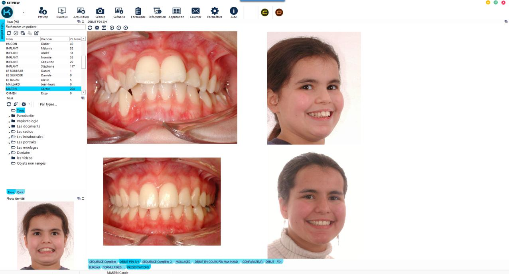
Séquence complète 2
Affichage complet qui montre à la fois la photo de profil du patient et sa radiographie panoramique (image des dents et des mâchoires). C'est comme avoir deux photos côte à côte dans le même album pour mieux comparer et analyser le cas.
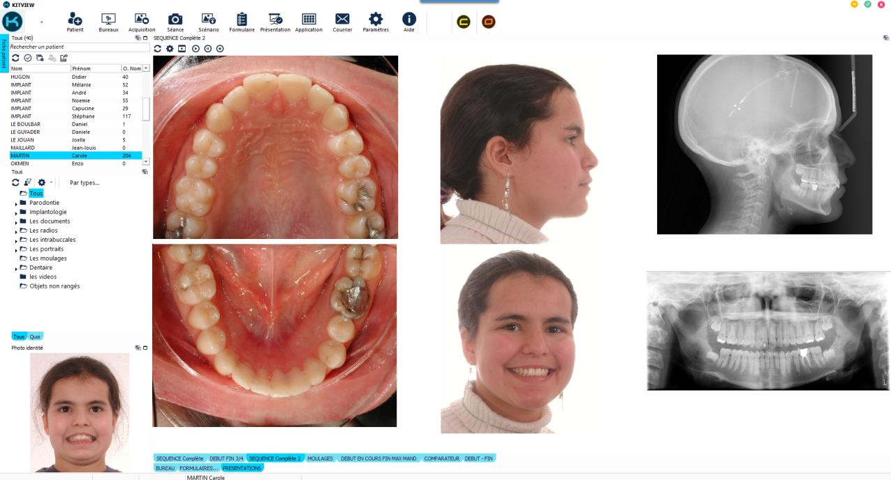
Moulages
Affichage de vos photos de moulages dentaires comme consulter un album photo de vos empreintes dentaires. Cette section vous permet de voir toutes les photos des moulages dentaires de vos patients, rangées de manière claire et organisée. Ne vous inquiétez pas, c'est très simple à utiliser pensez à cela comme à un album photo numérique spécialement conçu pour les empreintes dentaires de votre cabinet.
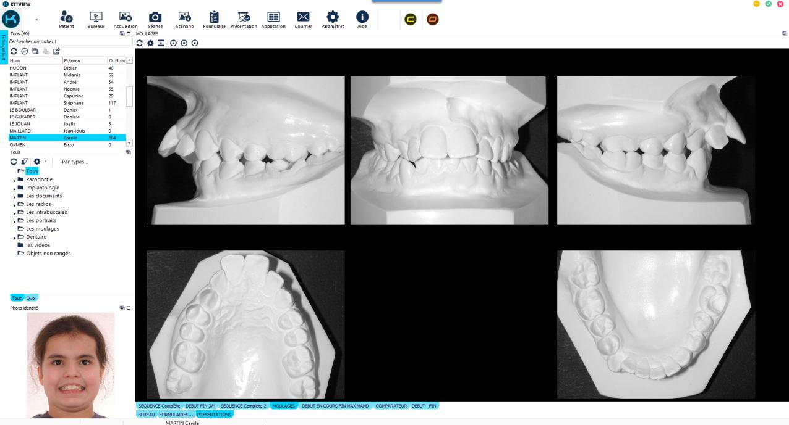
Début En cours Fin
Suivez l'évolution du sourire de votre patient comme un album photo en 3 étapes Cette fonction vous permet de comparer facilement 3 photos prises à différents moments du traitement, comme si vous feuilletiez un album photo. Par exemple : une photo avant le traitement, une au milieu, et une à la fin. C'est très simple : le logiciel place les 3 images côte à côte pour que vous puissiez voir d'un coup d'œil les progrès réalisés. Ne vous inquiétez pas, c'est automatique une fois que vous avez sélectionné vos 3 photos.
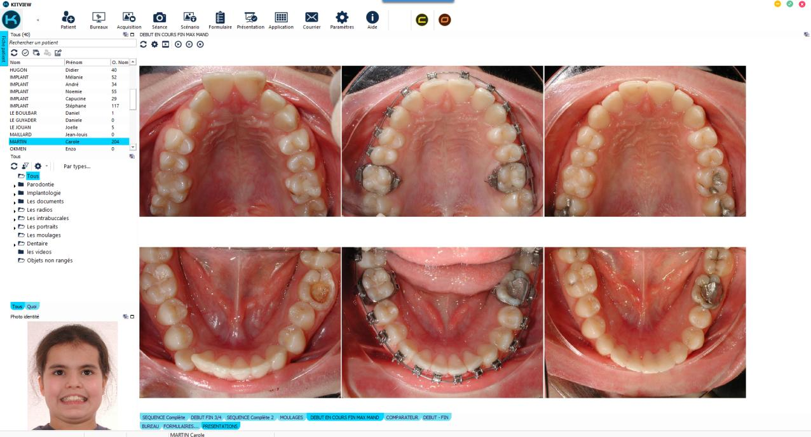
Comparateur
Cet outil vous permet de placer deux photos l'une à côté de l'autre pour les comparer facilement comme lorsque vous placez deux photos sur votre table pour voir les différences. Vous pouvez personnaliser cet affichage selon vos préférences, par exemple choisir quelle photo va à gauche ou à droite. C'est très pratique pour comparer un "avant" et un "après" traitement. Ne vous inquiétez pas, c'est simple à utiliser !
10. Le Docking (personnalisation du bureau)
Pensez à votre bureau comme à votre espace de travail personnel, comme un vrai bureau physique que vous pouvez organiser à votre goût. Dans Kitview, c'est exactement pareil ! Vous pouvez complètement personnaliser votre écran principal selon vos habitudes de travail. Ne vous inquiétez pas, c'est très simple : vous pouvez ajouter de nouveaux éléments (comme poser un nouvel objet sur votre bureau), enlever ceux qui ne vous servent pas (comme ranger dans un tiroir), ou simplement les déplacer pour les avoir sous la main là où c'est le plus pratique pour vous. Chaque orthodontiste peut ainsi créer son environnement de travail idéal !
Activer le mode de personnalisation
- Cliquez sur« Paramètres »
- Pour accéder aux réglages généraux de votre logiciel (comme les paramètres principaux de votre appareil photo), suivez ces étapes simples : Cherchez le bouton « Administration » dans votre écran c'est là où se trouvent tous les réglages importants Cliquez dessus pour ouvrir le menu Dans la liste qui s'affiche, cliquez sur « Général » Ne vous inquiétez pas, c'est comme ouvrir les paramètres de votre téléphone quelques clics suffisent !
- Activez le "Mode Expert" en cochant la case correspondante. Ne vous inquiétez pas, cette option vous donne simplement accès à plus de fonctionnalités avancées comme passer d'un mode simple à un mode complet dans votre appareil photo. Vous pouvez toujours revenir au mode normal si besoin.
- Cliquez sur« Bureaux »
- Cliquez sur le bouton « Réorganiser le bureau ». Cette fonction vous permet de remettre de l'ordre dans votre espace de travail, comme lorsque vous rangez votre bureau physique. Ne vous inquiétez pas, c'est très simple à utiliser.

Actions disponibles
- Pour agrandir ou rétrécir une zone de votre écran (comme ajuster la taille d'une fenêtre) : placez votre curseur de souris exactement sur la ligne qui sépare deux zones vous verrez apparaître une petite flèche à double sens. C'est le signal que vous êtes au bon endroit ! Cliquez alors et maintenez le bouton de la souris enfoncé, puis faites glisser vers la droite pour agrandir ou vers la gauche pour rétrécir. Ne vous inquiétez pas, c'est comme déplacer une cloison dans une pièce c'est très simple une fois qu'on a le coup de main !
- Supprimer une zone : cliquez sur la croix de la zone
- Pour déplacer une zone de votre écran, c'est simple comme déplacer un objet sur votre bureau ! Voici comment faire étape par étape : Placez votre souris sur le titre de la zone (la barre du haut) Cliquez et maintenez le bouton de la souris enfoncé (comme si vous attrapiez l'objet) Sans relâcher, déplacez votre souris vers les petites flèches que vous voyez à l'écran Relâchez le bouton de la souris une fois arrivé au bon endroit Ne vous inquiétez pas si vous ne réussissez pas du premier coup, c'est normal ! Vous pouvez recommencer autant de fois que nécessaire.
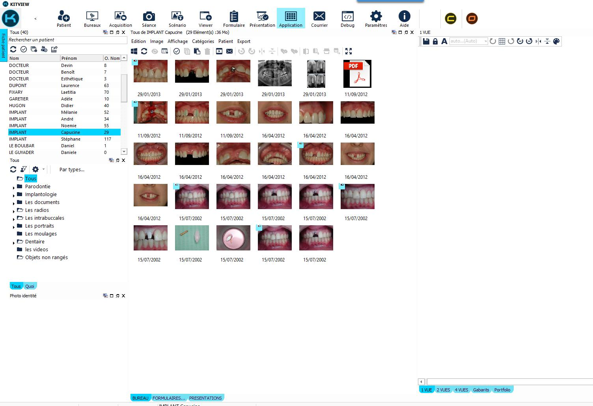
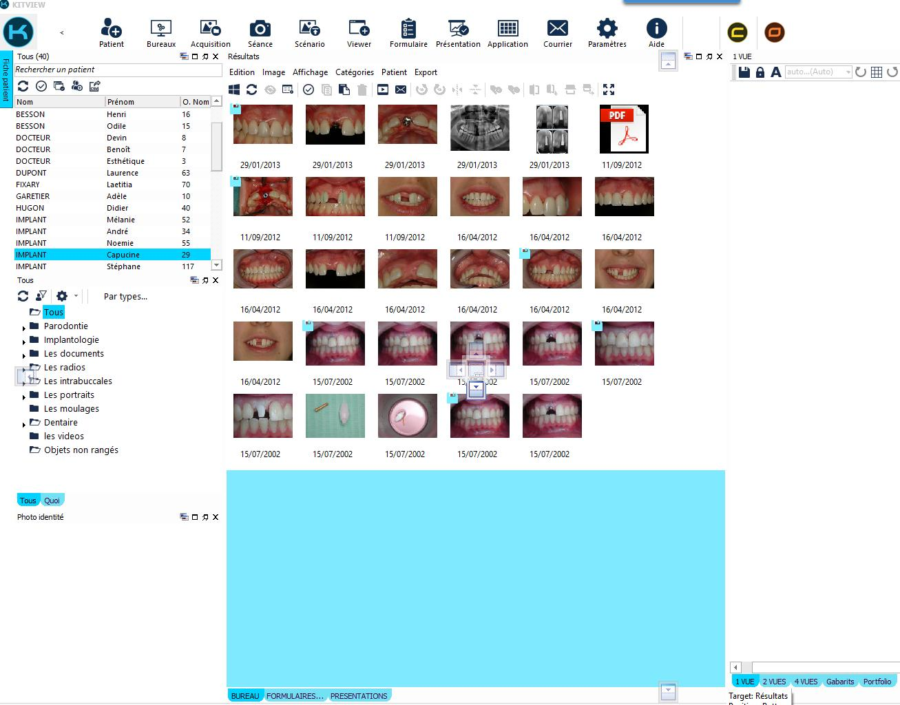
Voici comment créer votre propre espace de travail personnalisé Ne vous inquiétez pas, personnaliser votre bureau dans Kitview est aussi simple que de réorganiser votre bureau physique ! Pensez-y comme à l'aménagement de votre espace de travail : vous pouvez placer vos outils les plus utilisés à portée de main et organiser tout selon vos habitudes. Étape par étape : Cliquez sur le bouton "Personnaliser" (comme si vous déplaciez des objets sur votre bureau) Glissez et déposez les éléments où vous le souhaitez Sauvegardez vos modifications C'est tout ! Votre bureau est maintenant organisé exactement comme vous le voulez.
11. Créer une présentation fixe personnalisée
Vous pouvez créer vos propres présentations personnalisées, comme si vous composiez votre propre album photo. C'est très simple : choisissez les petites images d'aperçu (appelées vignettes) qui vous intéressent et ajoutez des mots-clés pour les retrouver facilement plus tard. Pensez-y comme à la création d'un classeur sur mesure avec vos photos préférées, organisées exactement comme vous le souhaitez. Ne vous inquiétez pas, vous gardez le contrôle total sur ce que vous voulez inclure dans votre présentation.
Étapes de création
- Cliquez sur l'onglet« Paramètres »
- Cliquez sur« Administration »
- Cliquez sur« Général »
- Activez le « Mode expert » en cliquant sur la petite case à cocher à côté de cette option. C'est comme passer du mode automatique au mode manuel sur un appareil photo cela vous donne accès à plus d'options avancées. Ne vous inquiétez pas, vous pourrez toujours revenir au mode normal si besoin.
- Cliquez sur l'onglet« Présentation »
- Une fenêtre s'ouvre : cliquez sur« Présentations libres »
- Cliquez sur« Créer une présentation libre »
- Nommez votre présentation

Ajouter des vignettes à la présentation
- Cliquez sur le petit+
- Une nouvelle fenêtre va apparaître sur votre écran (comme quand vous ouvrez un nouveau dossier). Ne vous inquiétez pas, c'est normal ! Dans cette fenêtre, vous verrez plusieurs choix. Cliquez simplement sur le bouton qui indique « Vignette avec attributs ». Cette option vous permettra de voir vos photos sous forme de petites images avec leurs informations, comme dans un album photo avec des légendes.
- Ne vous inquiétez pas, c'est très simple ! Voici comment procéder étape par étape : Placez votre souris à l'endroit où vous voulez commencer votre sélection Appuyez sur le bouton gauche de votre souris et maintenez-le enfoncé (comme si vous vouliez dessiner) Tout en gardant le bouton enfoncé, déplacez votre souris pour tracer un carré ou un rectangle autour de la zone qui vous intéresse Relâchez le bouton de la souris vous verrez alors apparaître une petite image (appelée "vignette"), comme un aperçu de ce que vous avez sélectionné Pour finaliser, cliquez rapidement deux fois de suite (double-clic) sur cette petite vignette C'est exactement comme dessiner un cadre autour d'une photo pour la sélectionner !
- Une nouvelle fenêtre apparaît à l'écran, comme si vous ouvriez un petit carnet d'adresses. Dans cette fenêtre, vous verrez une liste de mots-clés disponibles. Tapez quelques lettres du mot que vous cherchez dans la zone de recherche (ne vous inquiétez pas, vous n'avez pas besoin de taper le mot en entier). Une fois que vous voyez le mot-clé souhaité dans la liste, cliquez deux fois rapidement dessus avec votre souris c'est ce qu'on appelle un "double-clic". C'est simple : clic-clic rapidement, comme si vous frappiez deux fois à une porte.
- Le mot-clé s'affiche dans le tableau à droite
- Cliquez sur le bouton "Valider" pour confirmer votre choix ne vous inquiétez pas, c'est simple ! Répétez cette même étape pour chacune des petites images (appelées "vignettes") une par une. Comme quand vous triez des photos dans un album, vous devez valider chaque image séparément.
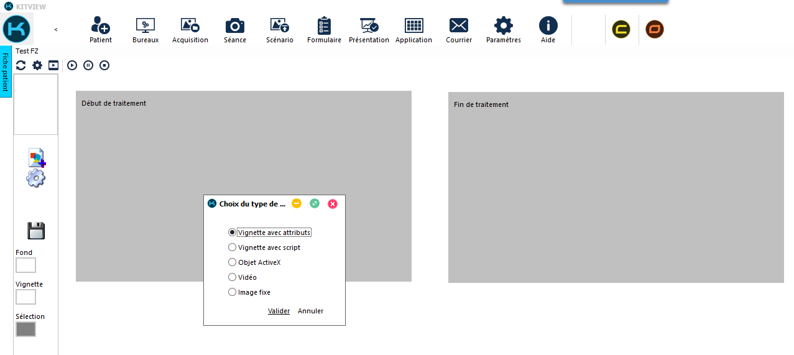
Redimensionner et aligner les vignettes
Pour sélectionner plusieurs photos en même temps (comme quand vous voulez déplacer plusieurs objets d'un coup), c'est simple : gardez le doigt appuyé sur la touche "Ctrl" de votre clavier (ne vous inquiétez pas, c'est la touche marquée "Ctrl" en bas à gauche), puis cliquez une par une sur chaque petite image que vous voulez choisir. Une fois que vous avez sélectionné toutes vos photos, vous pourrez utiliser les boutons d'alignement pour les ranger proprement, comme si vous aligniez des cadres photos sur un mur.
- Même largeur : uniformise la largeur
- Aligné en bas/haut : aligne verticalement
- Aligné à gauche/droite : aligne horizontalement
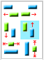
Cliquez sur l'icône de sauvegarde (elle ressemble à une petite disquette) pour enregistrer votre présentation. C'est comme sauvegarder un document cela permet de conserver tout votre travail en sécurité. Ne vous inquiétez pas, c'est très simple : un seul clic suffit !
12. Diaporama
Le diaporama, c'est comme un album photo que vous feuilletez sur votre écran. Cette fonction vous permet de voir toutes les photos d'un patient les unes après les autres, en grand format qui remplit tout votre écran d'ordinateur. C'est très pratique pour examiner en détail l'évolution du traitement de votre patient, comme si vous regardiez de grandes photos posées sur votre bureau. Ne vous inquiétez pas, c'est très simple à utiliser !
Lancer un diaporama
- Sélectionnez le patient
- Cliquez sur« Affichage »
- Cliquez sur« Diaporama »
- Utilisez les flèches pour faire défiler les photos
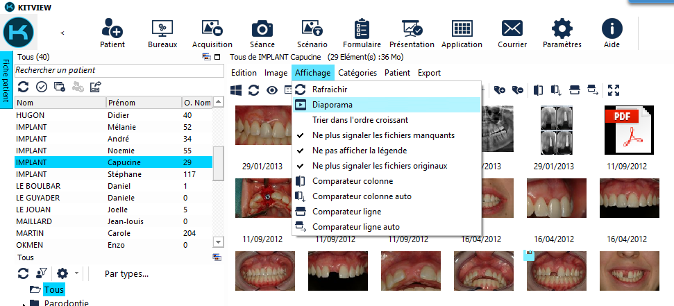
Si vous voulez voir seulement quelques photos de votre patient (et pas toutes), c'est très simple ! D'abord, cliquez sur les photos qui vous intéressent pour les sélectionner (comme quand vous choisissez des photos dans un album). Ensuite, cliquez sur le bouton « Diaporama » : vos photos choisies vont défiler automatiquement à l'écran, une par une. Ne vous inquiétez pas, c'est aussi facile que de regarder un album photo sur votre téléphone !
13. Comparer des photos
Kitview vous propose plusieurs outils très pratiques pour comparer des photos de vos patients, comme si vous placiez deux photos côte à côte sur votre bureau. Ces outils vous permettent de montrer facilement à vos patients comment leur sourire s'améliore au fil du traitement orthodontique. C'est un excellent moyen de visualiser les progrès réalisés et de motiver vos patients ! Ne vous inquiétez pas, ces outils sont simples à utiliser.
Comparer deux photos (mode 2 Vues)
- Cliquez sur l'onglet« 2 Vues »
- Sélectionnez les deux photos à comparer
- Pour verrouiller une photo, cliquez sur lepetit cadenas
- Une photo reste immobile (elle est "bloquée" en place) pendant que vous pouvez faire défiler l'autre photo avec votre souris ou votre doigt. C'est comme avoir deux albums photo côte à côte : l'un reste ouvert à la même page tandis que vous tournez les pages du second pour comparer les images.
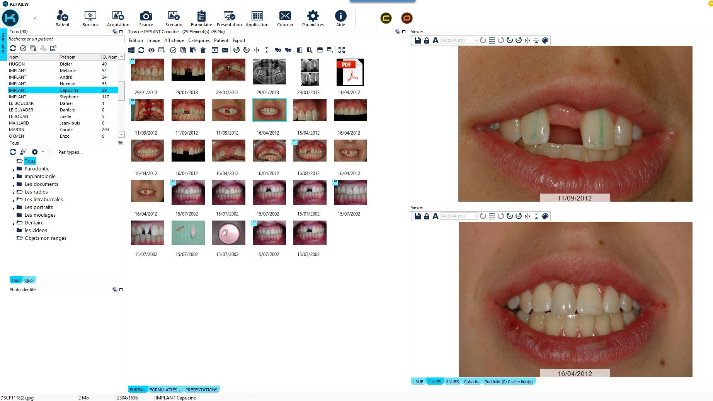
Comparateur en colonne ou ligne
Le comparateur est comme une table lumineuse où vous pouvez poser plusieurs photos côte à côte pour les observer ensemble. Cette fonction vous permet de sélectionner plusieurs photos de votre patient et de les afficher en même temps sur votre écran. C'est très pratique pour voir l'évolution du traitement par exemple, comparer les dents avant et après la pose d'un appareil. Ne vous inquiétez pas, c'est très simple à utiliser :
- Sélectionnez les photos à comparer
- Pour comparer vos photos (comme quand vous regardez un avant/après chez le coiffeur), cliquez simplement sur l'une de ces icônes selon ce que vous préférez : **Comparateur en colonne** : vos photos s'affichent l'une au-dessus de l'autre (comme deux photos collées verticalement) **Comparateur en ligne** : vos photos s'affichent côte à côte (comme deux photos posées sur une table) Pour chaque type, vous pouvez choisir : **Manuel** : vous choisissez vous-même quelles photos comparer **Automatique** : le logiciel sélectionne automatiquement les photos les plus appropriées Ne vous inquiétez pas, vous pourrez toujours changer d'affichage si le premier choix ne vous convient pas !
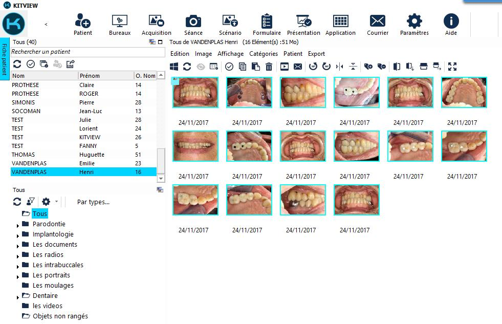
Mode manuel
Pour regarder vos différentes photos, c'est très simple ! Utilisez les petites flèches (comme sur une télécommande) pour passer d'une photo à l'autre. Ne vous inquiétez pas : la photo de référence (celle qui se trouve à gauche de votre écran, ou en haut) ne bouge pas elle reste toujours visible pour que vous puissiez comparer avec les autres photos. C'est comme si vous aviez un album photo où une page reste ouverte pendant que vous feuilletez les autres pages.
![L'outil de comparaison manuelle des colonnes Cet outil vous permet de comparer deux photos côte à côte, comme si vous placiez deux photos papier l'une à côté de l'autre sur votre bureau. C'est très pratique pour voir l'évolution du traitement de votre patient en comparant une photo "avant" et une photo "après". Ne vous inquiétez pas, c'est très simple à utiliser : il suffit de sélectionner les deux photos que vous voulez comparer, et elles s'afficheront automatiquement côte à côte sur votre écran.](img/page77_img01.jpeg)
Mode automatique
Les photos défilent automatiquement par date de prise de vue.
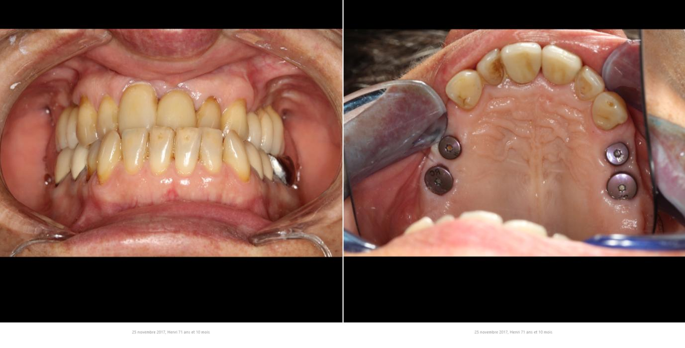
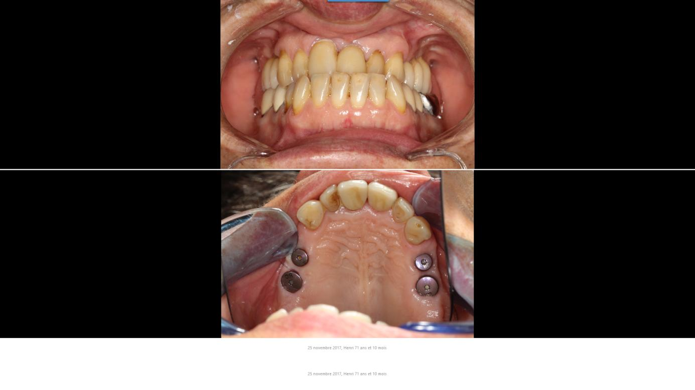
Comparateur par séances protocole
Si vous prenez toujours vos photos de la même manière (par exemple : toujours dans le même ordre, avec les mêmes angles), cette fonction vous permet de voir l'évolution du traitement de votre patient. C'est comme avoir un album photo où vous pourriez comparer les photos "avant" et "après" côte à côte. Ne vous inquiétez pas, c'est très pratique pour suivre les progrès du traitement orthodontique au fil des rendez-vous.
- Cliquez sur l'onglet« Présentation »
- Cliquez sur l'onglet« Comparateur »
- Choisissez les photos que vous voulez montrer à votre patient (par exemple : les 3 photos prises à l'intérieur de la bouche). C'est comme sélectionner les meilleures photos dans un album pour les présenter à quelqu'un. Cliquez simplement sur chaque photo que vous souhaitez inclure dans votre présentation.
- Choisissez comment vous voulez organiser vos photos : **Horizontal/Vertical** : comme quand vous tournez votre téléphone pour prendre une photo, choisissez si vos images s'affichent dans le sens de la largeur ou de la hauteur **Manuel/Automatique** : soit vous décidez vous-même de l'organisation (Manuel), soit le logiciel s'en charge tout seul (Automatique plus simple pour débuter) Ne vous inquiétez pas, vous pourrez toujours changer ces réglages plus tard !
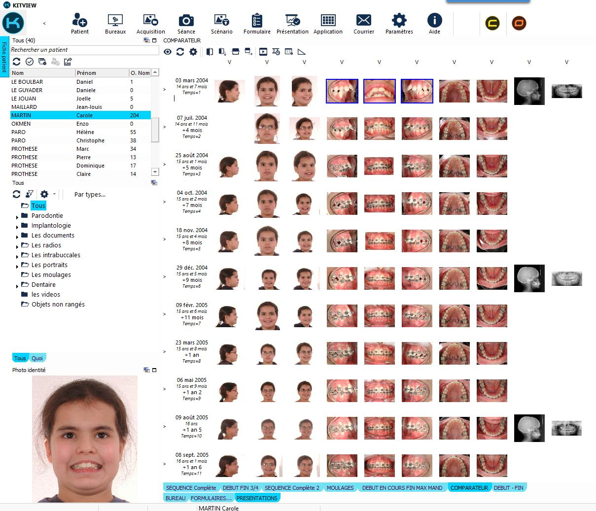
Ne vous inquiétez pas, c'est très simple à comprendre ! Imaginez que vous regardez un album photo de famille : les photos de votre premier rendez-vous avec le patient restent toujours visibles au même endroit (soit en haut de votre écran, soit sur la gauche). Pendant ce temps, les photos des autres rendez-vous défilent une par une, classées par date du plus ancien au plus récent. C'est comme si vous aviez une photo de référence qui ne bouge jamais, et que vous pouviez faire défiler les autres photos à côté pour comparer l'évolution du traitement.
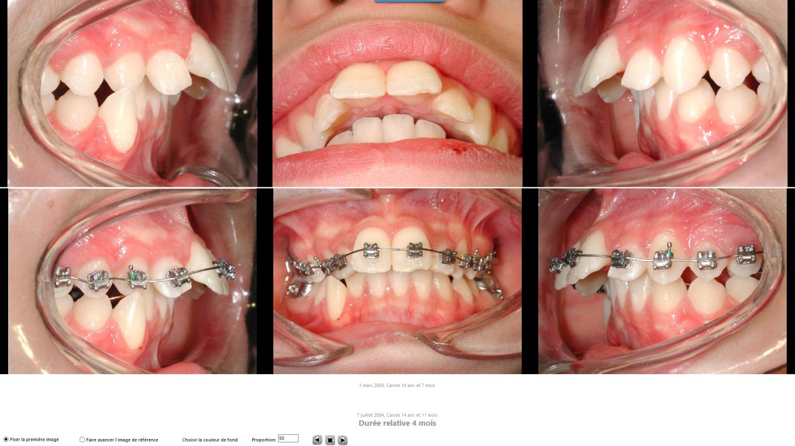
14. Modèles de courrier
Kitview vous permet de créer des lettres personnalisées très facilement, comme si vous aviez un assistant qui remplissait automatiquement les informations pour vous ! Voici comment cela fonctionne : imaginez que vous avez un modèle de lettre (comme un formulaire à trous). Kitview va automatiquement remplir ces "trous" avec les bonnes informations de chaque patient leur nom, prénom, adresse, et même leurs photos si besoin. Par exemple, au lieu d'écrire manuellement "Cher Monsieur Dupont" pour chaque patient, vous écrivez une seule fois "Cher [NOM DU PATIENT]" dans votre modèle. Kitview se charge ensuite de remplacer automatiquement cette partie par le vrai nom de chaque patient quand vous imprimez ou envoyez la lettre. C'est un vrai gain de temps ne vous inquiétez pas, c'est beaucoup plus simple à utiliser qu'à expliquer !
Utiliser un modèle existant
- Sélectionnez le patient
- Cliquez sur l'onglet« Courrier »
- Sélectionnez le modèle souhaité dans la liste
- Ne vous inquiétez pas, c'est très simple ! Quand vous ouvrez le courrier, c'est comme si vous preniez une lettre déjà commencée : toutes les informations importantes de votre patient (son nom, son âge, etc.) sont déjà écrites automatiquement. Vous n'avez pas besoin de tout retaper à la main le logiciel a fait le travail pour vous, comme un assistant très efficace !
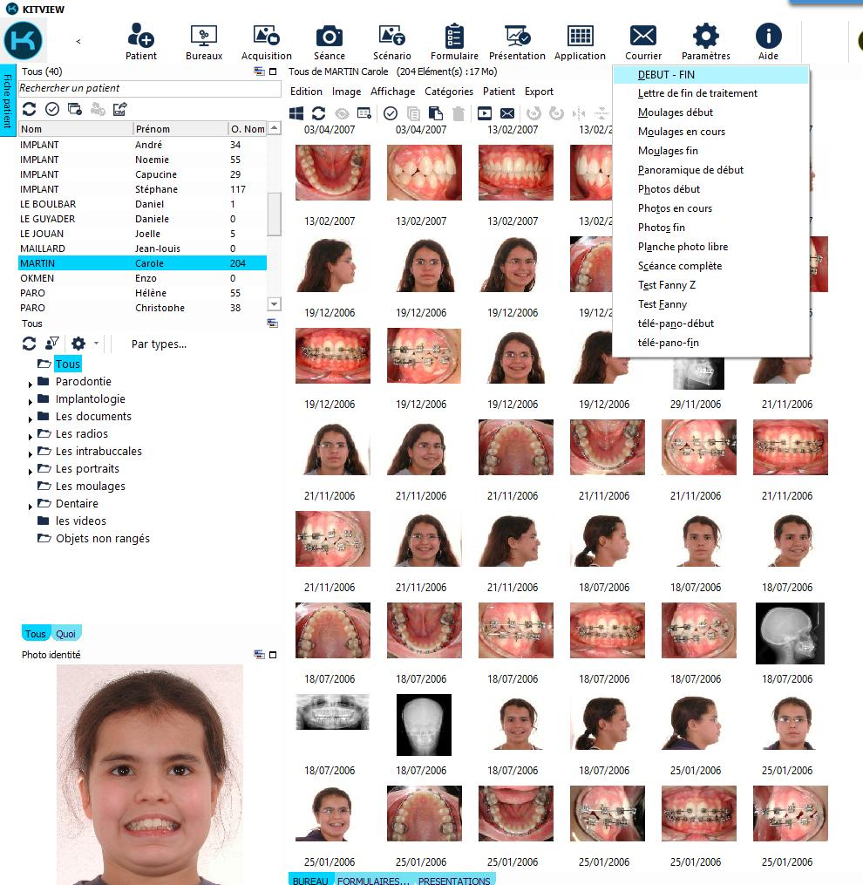
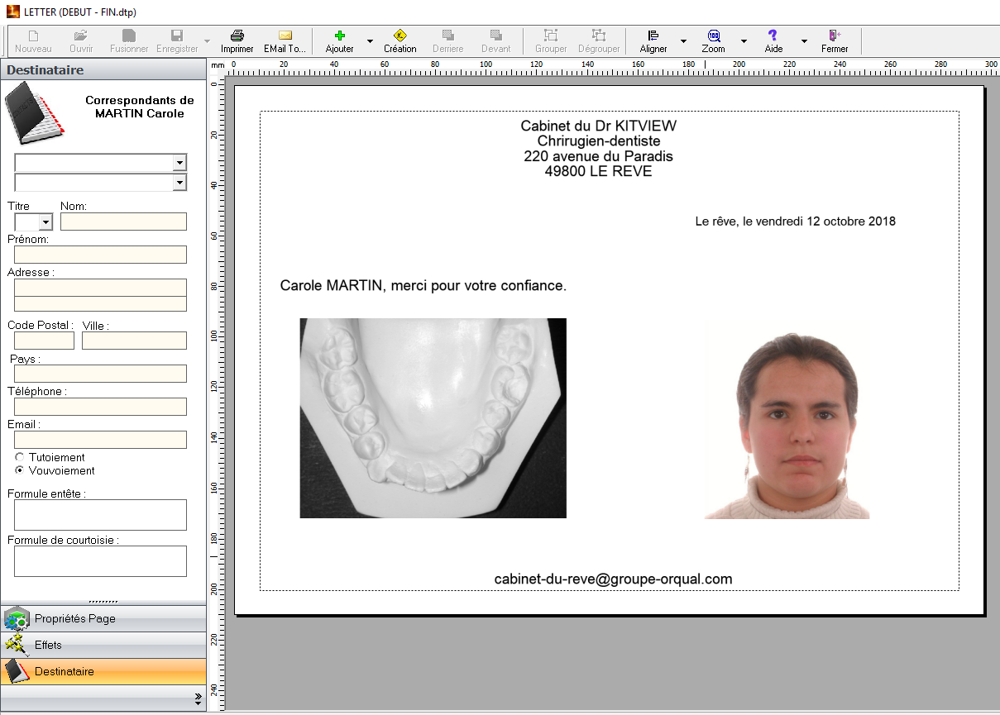
Voir les champs de fusion
Pour personnaliser votre document avec les informations de vos patients, c'est très simple ! Cliquez sur le mode « Création » pensez-y comme à un mode d'édition, comme quand vous modifiez un document Word. Une fois dans ce mode, vous pourrez voir et modifier les petits codes spéciaux (appelés "champs de fusion") qui ressemblent à ceci : <Prénom>, <Nom>, <Date du jour>. Ces codes fonctionnent comme des étiquettes vides qui se remplissent automatiquement avec les vraies informations de chaque patient. Ne vous inquiétez pas, c'est plus simple que ça en a l'air !
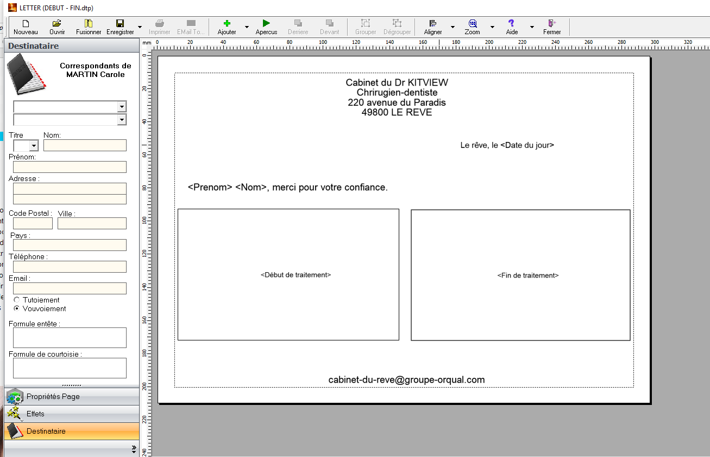
Créer un nouveau modèle de courrier
- Cliquez sur l'onglet« Courrier »
- Choisissez un modèle déjà créé pour vous servir de point de départ Comme lorsque vous utilisez un modèle de lettre pour gagner du temps, vous pouvez partir d'un modèle existant plutôt que de tout recommencer. Cliquez simplement sur le modèle qui vous convient le mieux ne vous inquiétez pas, vous pourrez le modifier ensuite selon vos besoins.
- Cliquez sur« Création »
- Cliquez sur« Nouveau »pour un document vierge
- Dans la section « Propriétés Page », cochez la case « Paysage » si vous voulez imprimer en format horizontal (comme une feuille tournée sur le côté). Ne vous inquiétez pas, vous pouvez toujours revenir en arrière si ce n'est pas le bon choix.
![Comment créer un courrier pour vos patients Ne vous inquiétez pas, créer un courrier dans Kitview est très simple ! C'est comme utiliser un traitement de texte, mais spécialement conçu pour les orthodontistes. Voici comment procéder étape par étape : Cliquez sur le bouton "Nouveau courrier" (il ressemble souvent à une enveloppe ou une feuille) Choisissez le type de courrier que vous voulez envoyer (par exemple : compte-rendu, convocation) Le logiciel remplira automatiquement les informations du patient Rédigez votre message dans la zone de texte Relisez et cliquez sur "Enregistrer" C'est aussi facile que d'écrire une lettre traditionnelle, mais en plus rapide !](img/page86_img01.jpeg)
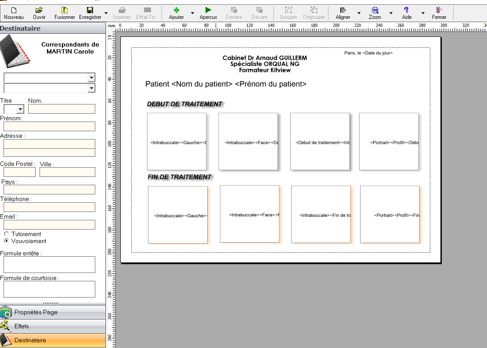
Ajouter des éléments
- Pour ajouter du texte sur votre photo (comme écrire une note sur une image), c'est très simple : Cliquez sur le bouton « Ajouter » en haut de votre écran Choisissez « Ajouter texte » dans le menu qui apparaît Dessinez un rectangle sur la photo à l'endroit où vous voulez placer votre texte (comme si vous traciez un cadre avec votre souris) Double-cliquez à l'intérieur de ce cadre pour commencer à taper votre texte Ne vous inquiétez pas, vous pouvez toujours modifier ou déplacer votre texte après !
- Pour ajouter une photo dans votre document (comme coller une image dans un album) : Cliquez sur le bouton « Ajouter » (ne vous inquiétez pas, c'est simple) Choisissez « Champ image » dans le menu qui apparaît Avec votre souris, dessinez un rectangle à l'endroit où vous voulez placer votre photo comme si vous traciez un cadre photo Double-cliquez dans ce cadre que vous venez de créer Une liste apparaît : choisissez la photo que vous souhaitez insérer C'est tout ! Votre image s'affichera automatiquement dans le cadre.
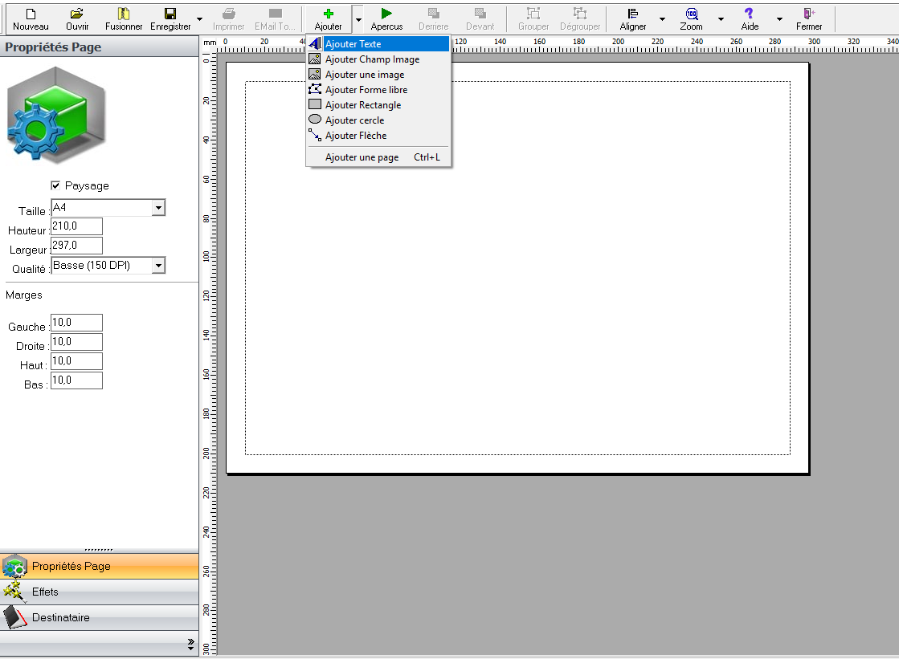
Enregistrer le modèle
- Cliquez sur le bouton « Aperçu » pour voir à quoi ressemblera votre résultat final. C'est comme regarder une photo avant de l'imprimer cela vous permet de vérifier que tout est correct avant de continuer. Ne vous inquiétez pas, vous pouvez toujours revenir en arrière pour faire des modifications si nécessaire.
- Cliquez sur« Enregistrer »
- Sélectionnez le dossier« Letters »
- Nommez votre fichier et cliquez sur« Enregistrer »
15. Portfolio et présentation PowerPoint
Le Portfolio, c'est comme un grand album photo spécial qui vous permet de rassembler les photos de différents patients en un seul endroit. Imaginez que vous voulez créer une présentation pour montrer vos meilleurs résultats : au lieu de chercher les photos une par une dans chaque dossier patient, vous les regroupez toutes dans votre Portfolio. Une fois que vous avez sélectionné toutes les photos que vous voulez, le logiciel crée automatiquement pour vous une belle présentation PowerPoint comme si vous aviez un assistant qui s'occupe de tout ! C'est très pratique pour préparer des conférences ou montrer votre travail. Ne vous inquiétez pas, le logiciel fait tout le travail technique à votre place.
Exemple : Toutes les intrabuccales de tous les patients
- Cliquez sur l'onglet« Tous »dans l'arborescence
- Choisissez le type de photos que vous voulez voir, comme "Intrabuccales" (photos prises à l'intérieur de la bouche). C'est comme choisir un album photo spécifique dans votre collection cliquez simplement sur la catégorie qui vous intéresse pour voir toutes les photos de ce type.
- Cliquez sur le bouton « Filtrer la population selon la collection ». Cette fonction vous permet de trier vos patients comme si vous rangiez des dossiers dans différents classeurs. Par exemple, vous pourrez voir uniquement les patients d'une collection spécifique (comme "Traitement Invisalign" ou "Enfants"). C'est très pratique pour organiser votre travail !
- Cliquez sur« Sélectionner tous les patients »
- Cliquez sur l'onglet« Portfolio »
- Toutes les photos correspondantes s'affichent
- Pour ajouter vos photos dans Kitview, c'est très simple ! Pensez à cela comme si vous organisiez des photos dans un album : D'abord, regardez vos photos disponibles sur la gauche de l'écran Cliquez sur chaque photo que vous voulez utiliser pour la sélectionner (elle sera encadrée) Une fois vos photos choisies, maintenez le clic sur l'une d'elles et faites-la glisser vers la zone de droite Relâchez le clic : vos photos sont maintenant intégrées ! Ne vous inquiétez pas si cela semble nouveau, c'est comme déplacer des fichiers sur votre bureau d'ordinateur. Avec un peu de pratique, ce geste deviendra automatique.
- Cliquez sur l'icône PowerPoint (le petit logo orange et rouge qui ressemble à une présentation). Une fenêtre va s'ouvrir pour vous demander combien de photos vous voulez afficher sur chaque diapositive de votre présentation. C'est comme choisir combien de photos mettre sur chaque page d'un album : vous pouvez en mettre 1, 2, 4 ou plus selon vos préférences. Ne vous inquiétez pas, vous pourrez toujours modifier ce choix plus tard.
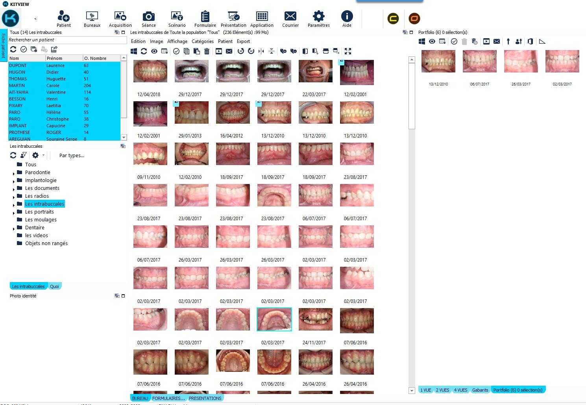
Résultat dans PowerPoint
La présentation s'ouvre automatiquement dans PowerPoint (le logiciel de Microsoft pour créer des diaporamas). Ne vous inquiétez pas, c'est très simple ! Une fois ouverte, vous pouvez personnaliser votre présentation comme vous le souhaitez : ajouter du texte pour expliquer les photos de votre patient, changer la disposition des éléments sur la page, modifier les couleurs, etc. C'est comme si vous aviez reçu un album photo pré-rempli que vous pouvez maintenant décorer et annoter selon vos besoins.
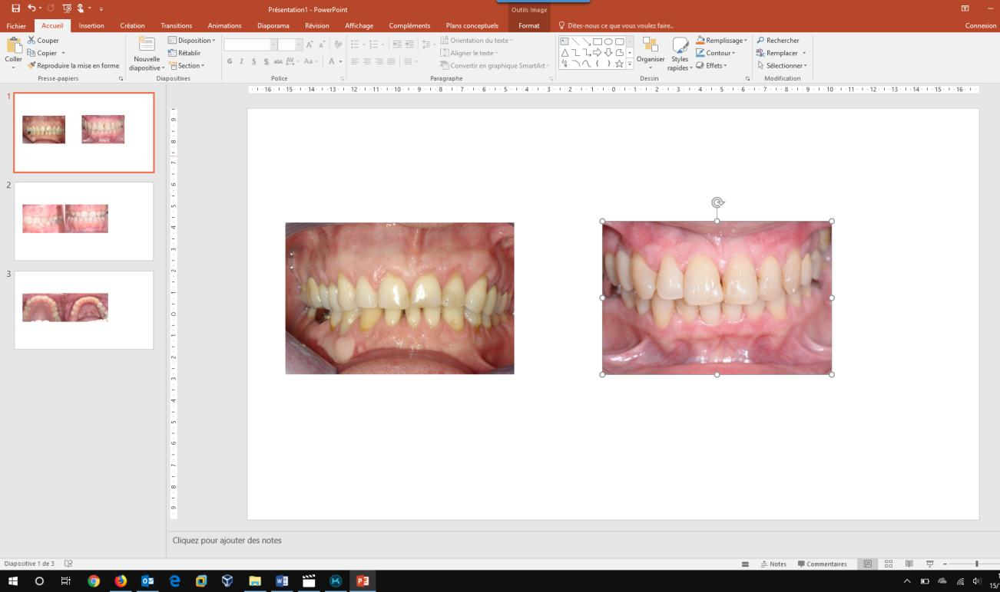
16. Filtre de population
Les filtres de population, c'est comme un système de tri dans un grand classeur de photos. Imaginez que vous avez des centaines de photos de patients dans votre cabinet : les filtres vous aident à retrouver rapidement exactement ce que vous cherchez. Par exemple, vous pouvez chercher : Toutes les photos de radiographies d'un patient précis Toutes les photos avant/après de plusieurs patients Un type particulier de clichés (photos du sourire, photos de profil, etc.) Ne vous inquiétez pas, c'est très simple à utiliser ! Les filtres sont classés par catégories, comme des onglets dans un classeur, pour que vous vous y retrouviez facilement. Cela vous fait gagner beaucoup de temps plutôt que de chercher manuellement dans toutes vos photos.
Exemple : Afficher toutes les radios panoramiques
- Cliquez dans l'onglet« Tous »
- Pour voir vos radiographies panoramiques, c'est très simple ! Cliquez d'abord sur le bouton "Radio" (comme si vous ouvriez un classeur de radiographies), puis choisissez "Panoramique". Vous pouvez aussi sélectionner une autre catégorie selon le type de radiographie que vous cherchez. Ne vous inquiétez pas, c'est comme feuilleter un album photo organisé par sections !
- Cliquez sur le bouton « Filtrer la population selon la collection ». Cette fonction vous permet de trier vos patients comme si vous rangiez des dossiers dans différents classeurs. Par exemple, vous pourrez voir uniquement les patients d'une collection spécifique (comme "Traitement Invisalign" ou "Enfants"). C'est très pratique pour organiser votre travail !
- Cliquez sur« Sélectionner tous les patients »
- Résultat : toutes les radios panoramiques de tous vos patients s'affichent
- Ne vous inquiétez pas, c'est très simple ! Imaginez que chaque patient a son propre classeur personnel dans votre armoire. Pour retrouver une radio spécifique, il vous suffit d'ouvrir le bon classeur. Voici comment faire : cliquez sur le nom du patient pour ouvrir son dossier (comme si vous ouvriez son classeur personnel), puis parcourez ses photos jusqu'à trouver la radio que vous cherchez. C'est comme feuilleter un album photo pour retrouver une image particulière.
17. Retrouver des photos par date
Les filtres de population fonctionnent comme un système de recherche dans un album photo géant. Imaginez que vous cherchez des photos dans votre album personnel : vous pouvez dire "je veux voir toutes les photos prises le 15 mars" ou "montre-moi toutes les photos prises entre janvier et mars". C'est exactement pareil ici ! Vous pouvez rechercher des photos prises à une date précise (par exemple le 10 janvier 2024) ou sur une période plus large (par exemple toutes les photos prises entre le 1er et le 31 janvier). Ne vous inquiétez pas, c'est très simple à utiliser le logiciel vous guide pas à pas pour choisir vos dates.
Recherche à une date précise
Exemple :Rechercher toutes les photos prises le 24/11/2017
- Cliquez sur« Quoi »
- Cliquez sur le bouton « Ajouter une condition à la racine ». Ne vous inquiétez pas, la "racine" c'est simplement le point de départ de votre règle comme le tronc d'un arbre d'où partent toutes les branches. En cliquant ici, vous allez créer votre première condition.
- Une nouvelle fenêtre va s'ouvrir sur votre écran (comme quand on ouvre une nouvelle page). Ne vous inquiétez pas, c'est simple : tapez le mot "Création" avec votre clavier dans la zone prévue. Une fois que vous appuyez sur Entrée, vous verrez que ce mot apparaît automatiquement dans la liste qui s'affiche. C'est comme ajouter un nouveau nom dans un carnet d'adresses !
- Ne vous inquiétez pas, c'est très simple ! Vous voyez le mot "Création" à l'écran ? Cliquez deux fois rapidement dessus (comme si vous ouvriez un dossier sur votre bureau). Une fois que vous aurez fait ce double-clic, le mot "Création" va automatiquement apparaître dans le tableau qui se trouve sur la partie droite de votre écran. C'est comme si vous déplaciez une étiquette d'un côté à l'autre !
- Cliquez sur« Valider »
- Ne vous inquiétez pas, c'est très simple ! Vous allez maintenant modifier deux éléments : D'abord, cliquez sur le menu déroulant de la condition et sélectionnez "Égale à" (comme quand vous choisissez une option dans une liste) Ensuite, changez la date en cliquant dans le champ de date et en saisissant la nouvelle date souhaitée C'est comme ajuster les critères d'un filtre pour trouver exactement ce que vous cherchez dans vos photos !
- Tous les patients ayant des photos prises à cette date s'affichent
- Toutes les photos prises à cette date s'affichent
![Trouver des photos prises à une date précise Vous voulez retrouver toutes les photos prises un jour particulier ? C'est très simple ! Imaginez que vous cherchez dans un album photo classique : au lieu de tourner toutes les pages, vous allez directement à la date qui vous intéresse. Voici comment faire étape par étape : Ne vous inquiétez pas, cette fonction est très intuitive Vous pourrez voir instantanément toutes les photos du jour choisi C'est comme avoir un calendrier magique qui vous montre directement les bonnes images Cette recherche est parfaite quand vous vous souvenez du jour exact d'une séance photo avec votre patient.](img/page92_img01.jpeg)
Pour afficher les photos de chaque patient, cliquez sur chaque dossier patient.
Recherche dans une plage de dates
Voici comment rechercher toutes les photos prises sur une période donnée (par exemple entre le 13/09/2017 et le 13/09/2018) : C'est comme chercher dans un album photo en précisant "je veux voir toutes les photos de cette année-là". Ne vous inquiétez pas, c'est très simple : Allez dans la fonction de recherche (généralement représentée par une loupe) Choisissez l'option "recherche par date" Indiquez la date de début : 13/09/2017 Indiquez la date de fin : 13/09/2018 Lancez la recherche Le logiciel va alors vous montrer toutes les photos de vos patients prises pendant cette période d'un an, comme si vous feuilletiez un album chronologique.
- Cliquez sur« Quoi »
- Cliquez sur le bouton « Ajouter une condition à la racine ». Ne vous inquiétez pas, la "racine" c'est simplement le point de départ de votre règle comme le tronc d'un arbre d'où partent toutes les branches. En cliquant ici, vous allez créer votre première condition.
- Tapez le mot "Création" avec votre clavier, puis cliquez deux fois rapidement sur ce mot pour l'ajouter à votre liste. Ne vous inquiétez pas, c'est comme cliquer deux fois sur un fichier pour l'ouvrir le double-clic permet de confirmer votre choix.
- Cliquez sur« Valider »
- Refaites exactement la même chose une deuxième fois pour créer une nouvelle condition. Ne vous inquiétez pas, c'est comme ajouter une deuxième règle à votre liste vous suivez simplement les mêmes étapes que vous venez de faire.
- Pour le premier critère, choisissez "Antérieure à" dans la liste déroulante (comme quand vous sélectionnez une option dans un menu). Ensuite, cliquez dans le champ de date et tapez la date limite que vous souhaitez par exemple, si vous voulez voir toutes les photos prises avant le 15 mars 2024, tapez cette date. C'est comme dire "montre-moi tout ce qui s'est passé avant cette date".
- Pour la seconde condition, ne vous inquiétez pas, c'est très simple ! Cliquez sur le menu déroulant et choisissez « Postérieure à » (cela signifie "après cette date"). Ensuite, indiquez la date de début à partir de laquelle vous voulez voir les photos comme si vous disiez "montre-moi toutes les photos prises après le 15 janvier par exemple".
- Tous les patients ayant des photos dans cette plage s'affichent
![Chercher des photos par période Vous pouvez retrouver facilement les photos prises entre deux dates précises, comme si vous feuilletiez un album photo chronologique. Par exemple, vous voulez voir toutes les photos prises en janvier ? C'est très simple ! Il suffit d'indiquer la date de début (1er janvier) et la date de fin (31 janvier), et le logiciel vous montrera automatiquement toutes les photos de cette période. C'est pratique pour suivre l'évolution du traitement de vos patients mois par mois.](img/page94_img01.jpeg)
18. Formulaires
Les formulaires sont comme un dossier médical numérique pour chaque patient. Ne vous inquiétez pas, c'est très simple à comprendre ! Imaginez un classeur où vous rangez toutes les informations importantes sur vos patients : leurs coordonnées, leur historique médical, leurs traitements... C'est exactement ce que font ces formulaires dans le logiciel. Concrètement, ils vous permettent de : Garder en mémoire toutes les informations de vos patients (comme dans un carnet d'adresses très détaillé) Retrouver rapidement ce que vous cherchez (plus besoin de fouiller dans des piles de papiers !) Organiser et utiliser ces informations facilement (par exemple, pour préparer un rapport ou suivre l'évolution d'un traitement) C'est comme avoir un assistant personnel qui classe et organise parfaitement tous vos dossiers patients !
Compléter un formulaire
- Cliquez dans l'onglet« Formulaire »
- Sélectionnez le formulaire dont vous avez besoin
- Complétez les informations
- Enregistrez le formulaire en cliquant sur l'icône disquette (le petit symbole qui ressemble à une disquette, comme celles qu'on utilisait autrefois pour sauvegarder des fichiers). Ne vous inquiétez pas, c'est simple : un clic suffit pour que vos informations soient sauvegardées en sécurité.
- Le logiciel a créé automatiquement un résumé de votre formulaire (comme un petit aperçu de ce que vous avez rempli). Pour voir tous les détails de ce résumé, cliquez simplement sur la petite icône qui ressemble à un dossier ne vous inquiétez pas, c'est très facile à repérer !
![Comment remplir un formulaire c'est simple ! Un formulaire, c'est comme un questionnaire à remplir sur papier, mais sur votre écran. Ne vous inquiétez pas, c'est très facile : Cliquez dans chaque case vide avec votre souris Tapez les informations demandées au clavier Passez à la case suivante en appuyant sur "Tab" ou en cliquant dedans Une fois tout rempli, cliquez sur le bouton "Valider" ou "Enregistrer" Comme quand vous remplissez un formulaire chez le médecin, prenez votre temps et vérifiez vos informations avant de valider.](img/page96_img01.png)
Recherche de cas similaires
Exemple : Comment trouver facilement les dossiers de vos patients qui ont une inflammation des gencives Ne vous inquiétez pas, c'est très simple ! Imaginez que vous cherchez dans un grand classeur médical. Au lieu de feuilleter tous les dossiers un par un, le logiciel va faire cette recherche pour vous en quelques secondes. Vous pourrez ainsi retrouver rapidement tous les patients concernés par ce problème de gencives.
- Cliquez sur un dossier patient
- Cliquez sur l'onglet« Formulaire »
- Pour voir le résumé de tous vos formulaires (comme un aperçu de tous vos documents), c'est très simple : cherchez la petite image qui ressemble à un dossier ou à un classeur sur votre écran, puis cliquez dessus avec votre souris. Ne vous inquiétez pas si vous ne le trouvez pas tout de suite, ce petit dossier se trouve généralement dans la barre d'outils en haut de votre écran.
- Pour chercher quelque chose dans vos photos, c'est très simple ! Regardez en haut de votre écran : vous verrez une petite loupe (comme une loupe de détective). Cliquez dessus avec votre souris. Cette loupe s'appelle "Mode recherche" c'est votre outil pour retrouver rapidement n'importe quelle photo de patient. Ne vous inquiétez pas, c'est aussi facile que de chercher dans un album photo !
- Cliquez sur les critères que vous souhaitez retrouver dans vos photos (par exemple : « gingivite »). C'est comme utiliser des étiquettes pour retrouver facilement certains types de photos de vos patients. Ne vous inquiétez pas, c'est très simple : il suffit de cliquer sur le mot qui décrit ce que vous cherchez.
- Cliquez à nouveau sur l'icône loupe (qui ressemble à une loupe de détective) appelée « Mode recherche », puis cliquez sur le bouton « Recherche ». Ne vous inquiétez pas, c'est comme utiliser un moteur de recherche sur internet vous activez d'abord le mode recherche, puis vous lancez la recherche.
- Les dossiers patients correspondants s'affichent

19. Support de formation
Ne vous inquiétez pas, vous n'êtes pas seul pour apprendre Kitview ! Nous avons créé un site internet spécialement pour vous aider, comme une école en ligne dédiée à Kitview. Sur ce site, vous trouverez de nombreuses vidéos qui vous montrent étape par étape comment utiliser le logiciel c'est comme avoir un professeur qui vous guide à votre rythme. Vous y découvrirez aussi des exemples de formulaires tout prêts que vous pourrez utiliser dans votre cabinet, comme des modèles que vous n'avez plus qu'à personnaliser. C'est un véritable guide d'accompagnement pour vous sentir à l'aise avec le logiciel !
Accéder au site support
- Cliquez dans l'onglet« Aide »
- Pour accéder à l'aide et aux tutoriels, cliquez sur le bouton « Support formation ». Ne vous inquiétez pas, c'est comme ouvrir un manuel d'instructions vous y trouverez toutes les explications pour bien utiliser le logiciel, étape par étape.
- Vous êtes redirigé vers le site :www.kitview-support.fr